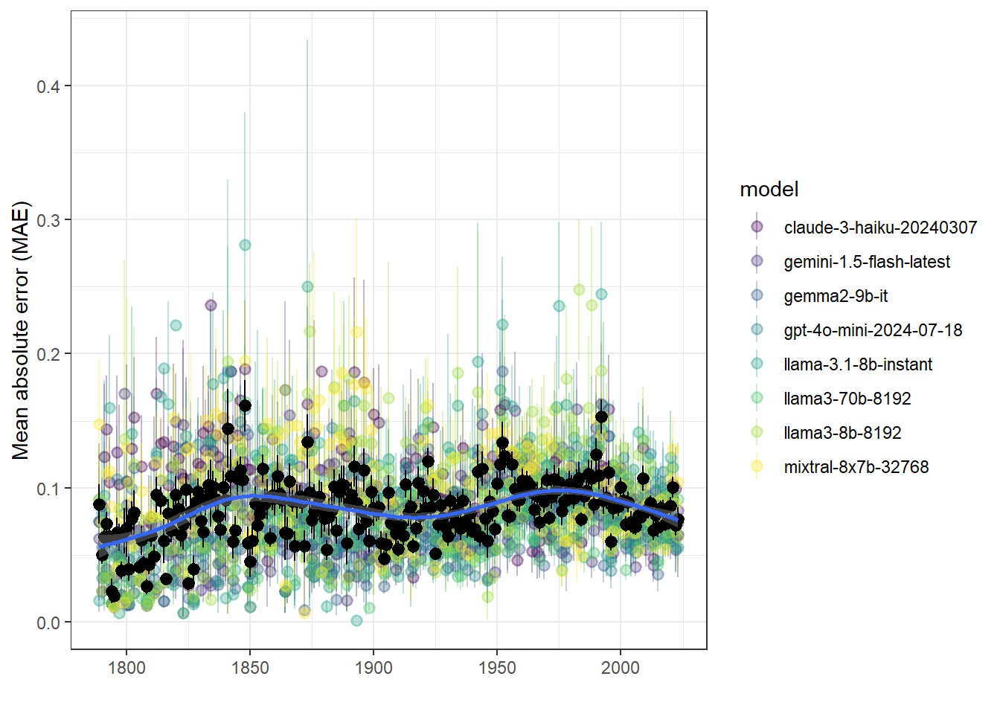
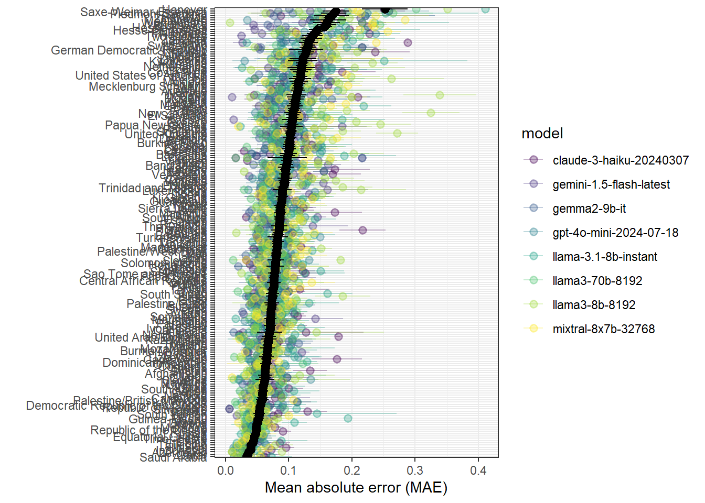

![]()
library(targets)
library(tidyverse)
library(democracyData)
library(corrr)
library(R.AI)
theme_set(theme_bw())
tar_load(correlations)
tar_load(combined_responses)
tar_load(combined_responses_wide)
tar_load(combined_responses_summary)
tar_load(estimated_costs)Using Large Language Models to generate political regime datasets: An update
Last year, I used OpenAI’s GPT3.5 and Anthropic’s Claude 2.1 to generate democracy scores with a prompt based on the polyarchy variable of V-Dem. It’s been a while, and models have become better at a lot of tasks: are they any better at generating democracy scores, or other sorts of political regime data? TL;DR: yes they are. The details are interesting.
This time I tested 11 different models, ranging from the top proprietary models (Gemini Pro 1.5, Claude Sonnet 3.5, and GPT-4o) to the slimmer and faster versions of these models (Gemini Flash 1.5, Claude Haiku, GPT-4o mini) to a number of open weights models (llama3-8b, llama3-70b. llama-3.1-8b-instant, mixtral-8x7b-32768, gemma2-9b-it, all via the groq API). I also developed an R package to help me access a variety of models form R ({R.AI} - github repo here; I know, this is easier in Python, but I’m an R person).
I used large sample of the latest version of the V-Dem dataset, going all the way back to the 18th century; I sampled uniformly 2,000 country-years from it.
I used a very simple prompt, based on the V-Dem description of the principle of electoral democracy:
You are an AI with superhuman knowledge of the politics of {country} and you help political scientists create detailed evaluations of its political regime.
The electoral principle of democracy seeks to embody the core value of making rulers responsive to citizens, achieved through electoral competition for the electorate’s approval under circumstances when suffrage is extensive; political and civil society organizations can operate freely; elections are clean and not marred by fraud or systematic irregularities; and elections affect the composition of the chief executive of the country. In between elections, there is freedom of expression and an independent media capable of presenting alternative views on matters of political relevance.
To what extent is the ideal of electoral democracy in its fullest sense achieved in {country} during the year {year}?
Use only knowledge relevant to {country} during the year {year}. Your final answer should be a single number on a scale of 0 to 1, with 0 being not democratic at all and 1 being fully democratic, enclosed in
tags. Before answering, consider in detail the degree of electoral competition, the extent of the suffrage, the ability of civil society organizations to operate freely, the fairness of elections, the degree to which the composition of the chief executive of the country is affected by the results of the elections, the ability of citizens to express themselves, and the degree to which independent media exists. Make sure to include concrete examples, and explain the reasoning for your final score.
This simple prompt was surprisingly effective; the generated data is typically correlated at the 0.9 level and above, which is on a par with the correlations between existing democracy datasets (Table 1), and larger models are better correlated (Llama 70B correlates at 0.94, and GPT-4o at 0.96).
correlations[[1]] |>
as_tibble(rownames = "score") |>
knitr::kable(digits = 2)| score | v2x_polyarchy | score_claude_3_haiku_20240307 | score_gpt_4o_mini_2024_07_18 | score_llama3_8b_8192 | score_llama3_70b_8192 | score_llama_3_1_8b_instant | score_mixtral_8x7b_32768 | score_gemma2_9b_it | score_gemini_1_5_flash_latest |
|---|---|---|---|---|---|---|---|---|---|
| v2x_polyarchy | 1.00 | 0.89 | 0.91 | 0.88 | 0.94 | 0.88 | 0.92 | 0.93 | 0.93 |
| score_claude_3_haiku_20240307 | 0.89 | 1.00 | 0.91 | 0.84 | 0.91 | 0.84 | 0.91 | 0.91 | 0.89 |
| score_gpt_4o_mini_2024_07_18 | 0.91 | 0.91 | 1.00 | 0.86 | 0.93 | 0.87 | 0.93 | 0.93 | 0.91 |
| score_llama3_8b_8192 | 0.88 | 0.84 | 0.86 | 1.00 | 0.88 | 0.88 | 0.88 | 0.89 | 0.90 |
| score_llama3_70b_8192 | 0.94 | 0.91 | 0.93 | 0.88 | 1.00 | 0.89 | 0.95 | 0.93 | 0.94 |
| score_llama_3_1_8b_instant | 0.88 | 0.84 | 0.87 | 0.88 | 0.89 | 1.00 | 0.89 | 0.88 | 0.89 |
| score_mixtral_8x7b_32768 | 0.92 | 0.91 | 0.93 | 0.88 | 0.95 | 0.89 | 1.00 | 0.93 | 0.93 |
| score_gemma2_9b_it | 0.93 | 0.91 | 0.93 | 0.89 | 0.93 | 0.88 | 0.93 | 1.00 | 0.93 |
| score_gemini_1_5_flash_latest | 0.93 | 0.89 | 0.91 | 0.90 | 0.94 | 0.89 | 0.93 | 0.93 | 1.00 |
More interestingly, the averaged scores are better correlated with V-Dem than the individual scores, suggesting that model errors “cancel out”; the average correlation is 0.95, which is higher than the correlation of any individual model’s generated scores with the V-Dem polyarchy index.
combined_responses_summary |>
select(v2x_polyarchy, Mean) |>
set_names(c("v2x_polyarchy", "avg. of generated scores")) |>
corrr::correlate() |>
knitr::kable(digits = 2)| term | v2x_polyarchy | avg. of generated scores |
|---|---|---|
| v2x_polyarchy | NA | 0.95 |
| avg. of generated scores | 0.95 | NA |
The models varied quite a bit, however, in how far away they were from the V-Dem scores (Figure 1), though they were rarely much beyond 0.1 in absolute error; the median absolute deviation was 0.07 (remember, the V-Dem scores are on a 0-1 scale; an absolute error of less than 0.1 is pretty good!). The larger models (e.g., Llama3-70b) were typically closer to the V-Dem scores than the smaller models, though Google’s Gemma2 9B model did surprisingly well. One explanation here is that the larger models have memorized more of the V-Dem data; more on this in a bit.
library(ggbeeswarm)
combined_responses |>
filter(!is.na(score)) |>
group_by(model) |>
mutate(mae = abs(v2x_polyarchy-score)) |>
arrange(mae) |>
ggplot(aes(x = mae, y = fct_reorder(model, mae, mean))) +
geom_beeswarm(aes(color = model), alpha = 0.3, show.legend = FALSE) +
stat_summary() +
geom_boxplot(alpha = 0.3) +
scale_color_viridis_d() +
geom_vline(xintercept = 0.1, color = "red") +
labs(y = "", x = "Absolute deviation from V-dem polyarchy scores")Performance also varied per year, though without a clear pattern; earlier years are not consistently more “erroneously” classified by any models than later years or vice-versa (Figure 2).
combined_responses |>
filter(!is.na(score)) |>
mutate(ae = abs(v2x_polyarchy-score)) |>
ggplot(aes(y = ae, x = year)) +
stat_summary(aes(color = model), alpha = 0.3) +
stat_summary() +
geom_smooth() +
scale_color_viridis_d() +
labs(x = "", y = "Mean absolute error (MAE)")
And performance also varied per country, though again without a clear pattern (Figure 3); while the country with the largest deviation from V-Dem scores was the Duchy of Hanover in the 19th century, the next couple of countries are Ukraine and Australia.
combined_responses |>
filter(!is.na(score)) |>
group_by(country, model) |>
mutate(ae = abs(v2x_polyarchy-score)) |>
ggplot(aes(x = ae, y = fct_reorder(country, ae, mean))) +
stat_summary(aes(color = model), alpha = 0.3) +
stat_summary() +
scale_color_viridis_d() +
labs(y = "", x = "Mean absolute error (MAE)")
Here are the responses for Australia (Table 3)
combined_responses |>
filter(str_detect(country, "Australia")) |>
select(model, response) |>
knitr::kable()| model | response |
|---|---|
| claude-3-haiku-20240307 |
In 1828, Australia was still a British colony and did not have a fully democratic political system. While there were some elements of electoral competition and civil liberties, the overall level of democracy was quite limited.
The right to vote was highly restricted, with only a small fraction of the population (primarily wealthy, land-owning men) eligible to participate in elections. Women, Indigenous Australians, and the majority of the population were completely disenfranchised. This severely undermined the principle of extensive suffrage.
Elections for the colonial legislature, known as the Legislative Council, were held, but they were not fully free and fair. The Council was largely controlled by the colonial governor, who was appointed by the British government, rather than being directly elected. There were also reports of electoral irregularities and fraud.
The ability of civil society organizations to operate freely was limited, as the colonial authorities closely monitored and restricted political activity. Independent media was also tightly controlled, with the colonial government exercising significant censorship powers.
While there was some freedom of expression, the colonial authorities were quick to crack down on any criticism or dissent against the government. The composition of the colonial executive, the governor, was not affected by the results of elections, as they were appointed by the British government.
Overall, while there were some limited democratic elements, the political system in Australia in 1828 fell far short of the ideal of electoral democracy. The severe restrictions on the right to vote, the lack of free and fair elections, the limited civil liberties, and the colonial government’s control over the political process all contributed to a very low level of democracy. | |claude-3-haiku-20240307 |To evaluate the extent to which the ideal of electoral democracy was achieved in Australia in 1873, I will consider the key factors outlined in the prompt:
Electoral competition: In 1873, Australia had a system of responsible government, with the prime minister and cabinet drawn from the party or coalition that commanded a majority in the lower house of parliament. Elections were held regularly, with the last election in 1872. However, the political system was dominated by two major parties - the Protectionists and the Free Traders - with little meaningful competition or ideological diversity.
Suffrage: Suffrage in Australia in 1873 was relatively extensive for the time, with all adult male British subjects able to vote, though women were still excluded. This represented a significant expansion of the franchise compared to earlier periods.
Civil society: Australians in 1873 generally enjoyed political and civil liberties, with freedom of association, assembly, and the press. However, there were some restrictions, such as laws against sedition that could be used to suppress dissent.
Election fairness: Elections in 1873 were generally considered free and fair, with little evidence of widespread fraud or irregularities. However, there were some concerns about the influence of money in politics and allegations of vote-buying in certain districts.
Composition of the executive: The results of elections did affect the composition of the government, with the prime minister and cabinet drawn from the party that commanded a majority in parliament. However, the system was still relatively new and the role of the governor-general appointed by the British crown remained significant.
Freedom of expression: Australians in 1873 generally enjoyed freedom of expression, with a vibrant press that could present alternative views on political matters. However, there were some restrictions, such as laws against sedition that could be used to suppress dissent.
Independent media: Australia in 1873 had a relatively independent media, with a range of newspapers representing different political perspectives. However, there were concerns about the influence of wealthy individuals and business interests on the media.
Overall, based on the above considerations, I would rate the extent of electoral democracy in Australia in 1873 as:
While Australia had many of the key features of an electoral democracy, such as regular elections, universal male suffrage, and political and civil liberties, there were still significant limitations, such as the dominance of the two-party system, some restrictions on civil society, and concerns about the influence of money and the governor-general in the political process. The system was still relatively new and evolving, and did not yet fully embody the ideal of electoral democracy in its fullest sense. | |claude-3-haiku-20240307 |<democracy>0.1</democracy>
In 1789, Australia was still a British penal colony and had not yet achieved any form of self-governance or electoral democracy. The country was under the direct rule of the British Crown and the Governor of New South Wales, who was appointed by the British government.
There were no elections or electoral competition in Australia at this time. The Governor and other colonial officials were not chosen by the people, but rather appointed by the British authorities. The suffrage was extremely limited, as only a small number of free settlers and emancipated convicts had any political rights.
Civil society organizations and independent media were virtually non-existent in the fledgling colony. Freedom of expression was heavily restricted, as the Governor maintained tight control over the flow of information and public discourse.
Overall, the ideal of electoral democracy was not at all achieved in Australia in 1789. The colony was essentially an autocratic outpost of the British Empire, with no meaningful political representation or participation by the local population. A score of 0.1 reflects the extremely limited degree of democracy present at this time. | |claude-3-haiku-20240307 |To evaluate the extent to which the ideal of electoral democracy was achieved in Australia in 1929, I will consider the key factors outlined in the prompt:
Electoral competition: In 1929, Australia had a multi-party system with the Australian Labor Party, the Nationalist Party, and the Country Party competing in elections. There was genuine competition between these parties, with power alternating between them. For example, in the 1929 federal election, the Labor Party led by James Scullin defeated the incumbent Nationalist government.
Suffrage: Australia had universal adult suffrage by 1929, with both men and women able to vote. The suffrage was extensive, covering the vast majority of the population.
Civil society and media: Australia had a vibrant civil society with trade unions, advocacy groups, and other organizations operating freely. The media was also largely independent, with a range of newspapers, radio stations, and other outlets presenting diverse political views.
Election fairness: While there were some isolated incidents of irregularities, the 1929 federal election was generally considered free and fair, with no systematic issues that would call the integrity of the results into question.
Impact on executive: The 1929 election resulted in a change of government, with the Labor Party forming a new administration. This demonstrates that elections in Australia at the time had a meaningful impact on the composition of the country’s chief executive.
Freedom of expression: Australians enjoyed a high degree of freedom of expression in 1929, with citizens able to openly criticize the government and participate in political discourse without fear of repression.
Based on this analysis, I would rate the extent of electoral democracy in Australia in 1929 as:
Australia in 1929 had a well-functioning electoral democracy that largely embodied the core principles outlined in the prompt. While not perfect, the country had extensive suffrage, genuine electoral competition, a free civil society and media, and elections that meaningfully impacted the composition of the government. The only minor deduction is for the occasional isolated irregularities that may have occurred, but these did not appear to be systematic or undermine the overall integrity of the democratic process. | |claude-3-haiku-20240307 |
In 1829, Australia was still a British colony and did not have a democratic system of government. The colony was governed by a Governor appointed by the British Crown, and there were no elections for the chief executive position.
The suffrage was extremely limited, with only a small number of male property owners having the right to vote in local elections for the colonial Legislative Council. The vast majority of the population, including women, Indigenous Australians, and non-property owners, were excluded from the political process.
There was little to no freedom of expression or independent media. The colonial authorities tightly controlled the press and censored any criticism of the government. Civil society organizations were also heavily restricted and monitored by the authorities.
Elections, where they did occur, were not free or fair. There were reports of voter intimidation, ballot-box stuffing, and other irregularities that undermined the integrity of the electoral process.
Overall, the ideal of electoral democracy was very far from being achieved in Australia in 1829. The country was still firmly under the control of the British colonial authorities, with no meaningful political representation or participation for the vast majority of the population. For these reasons, I would give Australia a score of 0.1 on the scale of democratic development in 1829. | |claude-3-haiku-20240307 |Unfortunately, I do not have detailed knowledge of the political regime in Australia in the year 1791, as Australia was not yet an independent nation at that time. In 1791, Australia was still a British colony, with the first European settlement having been established in 1788. The political system was not yet a democracy, but rather a colonial administration under the control of the British government.
Given the lack of information about the specific political conditions in Australia in 1791, I do not feel qualified to provide a numerical assessment of the extent to which the ideal of electoral democracy was achieved. The political system at that time was still in its very early stages of development, and did not yet have the key features of a modern democracy, such as electoral competition, universal suffrage, and an independent media.
Therefore, my assessment would be:
Australia in 1791 was not a democracy, as the colony was still under the direct control of the British government, without any meaningful electoral processes or civil liberties for the local population. The political system at the time was far from the ideal of electoral democracy described in the question. | |claude-3-haiku-20240307 |To evaluate the extent to which the ideal of electoral democracy was achieved in Australia in 1959, I will consider the key factors outlined in the prompt:
Electoral competition: In 1959, Australia had a multi-party system with the center-right Liberal Party and the center-left Australian Labor Party as the two major political parties. Elections were held regularly, and there was genuine competition between the parties for control of government. The 1958 federal election saw a close result, with the Liberal-Country coalition government led by Prime Minister Robert Menzies retaining power but with a reduced majority.
Suffrage: Australia had universal adult suffrage in 1959, with all citizens over the age of 21 eligible to vote. There were no significant restrictions on the right to vote.
Civil society: Australians enjoyed robust civil liberties, including freedom of speech, press, and association. Trade unions, professional associations, and other civil society organizations were able to operate freely and participate in the political process.
Election fairness: Elections in Australia in 1959 were generally considered free and fair, without significant issues of fraud or irregularities. The electoral system and administration were viewed as impartial and well-functioning.
Composition of executive: The results of elections did directly affect the composition of the federal government, with the party or coalition that won a majority in the House of Representatives forming the government and selecting the Prime Minister.
Freedom of expression: Australians had a high degree of freedom of expression in 1959, with an independent media that was able to present a range of political views and criticize the government.
Based on this assessment, I would rate the extent of electoral democracy in Australia in 1959 as:
Australia in 1959 had many of the key features of an electoral democracy, with competitive elections, universal suffrage, civil liberties, and an independent media. However, there were some limitations, such as the lack of full proportionality in the electoral system and the dominance of the two major parties. Overall, the country was a well-functioning democracy, but not a perfect realization of the democratic ideal. | |claude-3-haiku-20240307 |
In 1998, Australia’s political system largely embodied the ideal of electoral democracy, though with some notable limitations.
Electoral competition was robust, with multiple political parties and candidates competing for power. The suffrage was extensive, with all adult citizens able to vote. Civil society organizations were generally free to operate, though there were some restrictions on political advocacy by non-profit groups.
Elections were largely free and fair, with no major issues of fraud or irregularities. The results of elections did meaningfully affect the composition of the chief executive, with the prime minister and cabinet being drawn from the party or coalition that won a majority in the House of Representatives.
Citizens enjoyed broad freedom of expression, and the media landscape included a range of independent outlets that were able to present alternative views on political matters. However, there were some concerns about media concentration and the influence of powerful media moguls.
Overall, Australia in 1998 had a robust system of electoral democracy, with competitive elections, extensive suffrage, and generally free civil society and media. However, some limitations, such as restrictions on political advocacy by non-profits and concerns about media concentration, prevent it from being considered fully democratic by the highest standards. Hence, the score of 0.8 on the scale. | |claude-3-haiku-20240307 |
In 1993, Australia’s political system largely embodied the ideal of electoral democracy, though with some notable limitations.
Electoral competition was robust, with multiple political parties and candidates competing for power at both the federal and state levels. The suffrage was extensive, with universal adult suffrage in place and no significant restrictions on who could vote.
Civil society organizations were generally able to operate freely, engaging in political advocacy and mobilization. Elections were considered to be clean and fair, with no major issues of fraud or irregularities reported.
The composition of the chief executive, the Prime Minister, was directly affected by the results of parliamentary elections, with the leader of the party or coalition that won a majority in the House of Representatives becoming Prime Minister.
Citizens enjoyed broad freedoms of expression, with an active and independent media landscape that was able to present a range of political views. However, there were some concerns about media concentration and the potential for political influence over public broadcasters.
Overall, Australia’s political system in 1993 was highly democratic, with robust electoral competition, extensive suffrage, and strong civil liberties. However, the limitations around media independence and the potential for political influence prevent it from being considered a fully realized ideal of electoral democracy, hence the score of 0.8. | |claude-3-haiku-20240307 |Unfortunately, I do not have detailed knowledge of the political regime in Australia in the year 1796, as Australia was still a British colony at that time and did not have its own independent political system. The concept of electoral democracy as described in the prompt did not exist in Australia in 1796, as the country was not yet a sovereign nation and did not have elections or a system of representative government.
Given the limited information available about the political conditions in Australia in 1796, I do not feel I can provide a reliable assessment of the extent to which the ideal of electoral democracy was achieved. Any score I could provide would be purely speculative, without a solid factual basis.
Therefore, I will not provide a numerical score enclosed in
Electoral Competition: In 1828, the electoral system in New South Wales was limited. The first Legislative Council was established in 1824, but it was largely appointed rather than elected. The introduction of a limited form of electoral representation began to take shape, but competition was minimal, as the electorate was small and largely controlled by the colonial administration.
Extent of Suffrage: Suffrage was extremely limited in 1828. Only a small number of free men, primarily landowners, were allowed to vote. The majority of the population, including convicts, women, and Indigenous Australians, were excluded from the electoral process. This severely restricted the democratic nature of the political system.
Civil Society Organizations: The ability for civil society organizations to operate freely was constrained. While there were some informal groups and gatherings, the political environment was heavily influenced by the colonial government, which limited the scope for organized political movements or advocacy groups.
Fairness of Elections: Elections, when they occurred, were not fully free or fair. The electoral process was marred by irregularities, and the influence of the colonial administration meant that the outcomes were often predetermined or manipulated to favor certain interests.
Impact of Elections on the Chief Executive: The composition of the chief executive, namely the Governor, was not directly affected by elections. The Governor was appointed by the British Crown, and while there were some local representatives, the overall control remained with the colonial authorities, limiting the democratic influence of the electorate.
Freedom of Expression: There was limited freedom of expression in 1828. While some newspapers existed, they were often subject to censorship and could be influenced by the colonial government. The ability for citizens to express dissenting views was restricted, particularly against the backdrop of colonial authority.
Independent Media: The media landscape was not fully independent. Newspapers were present, but they often operated under the constraints of colonial oversight, limiting their ability to present alternative views or critique the government effectively.
Given these considerations, the ideal of electoral democracy in its fullest sense was not achieved in Australia in 1828. The combination of limited suffrage, lack of electoral competition, restricted civil society, unfair elections, and limited freedom of expression and independent media leads to a very low score on the democratic scale.
Thus, the final score reflecting the extent of electoral democracy in Australia during the year 1828 is:
Electoral Competition: By 1873, the colonies had established parliamentary systems, and elections were held for the Legislative Assemblies. However, the level of competition varied significantly between colonies. For instance, in New South Wales, the electoral system allowed for some degree of competition, but in other colonies, such as Queensland, the political landscape was more dominated by a few key players, limiting genuine competition.
Extent of Suffrage: Suffrage in 1873 was limited primarily to white male property owners. While some colonies had begun to extend voting rights to a broader segment of the male population, including those without property, women and Indigenous Australians were largely excluded from the electoral process. This significantly limited the democratic nature of the electoral system.
Civil Society Organizations: Civil society organizations were beginning to emerge, but their ability to operate freely was constrained. Political parties were forming, and there were movements advocating for broader suffrage and social reforms, but these were often met with resistance from established political elites.
Fairness of Elections: Elections during this period were not uniformly fair. While there were no widespread reports of systemic fraud, issues such as gerrymandering and the influence of money in politics were present. The electoral processes were still evolving, and the integrity of elections could be questioned in certain contexts.
Impact on Chief Executive Composition: The results of elections did affect the composition of the colonial governments, as the premiers were chosen based on parliamentary majorities. However, the influence of the British Crown and colonial governors still played a significant role in the political landscape, which limited the full realization of democratic governance.
Freedom of Expression: There was a degree of freedom of expression, with newspapers and public forums available for political discourse. However, this was often limited to the views of the dominant classes, and dissenting voices, particularly from marginalized groups, faced significant barriers.
Independent Media: The media landscape was developing, with several newspapers operating in the colonies. However, many were aligned with specific political interests, which could compromise their independence. The press did provide a platform for political debate, but it was not entirely free from bias.
Considering these factors, while Australia in 1873 exhibited some elements of electoral democracy, significant limitations remained, particularly regarding suffrage, the fairness of elections, and the influence of external powers. Therefore, I would assess the extent to which the ideal of electoral democracy was achieved in Australia during this year as follows:
<democracy>0.4</democracy> | |gpt-4o-mini-2024-07-18 |In 1789, Australia was not yet a fully established political entity as we understand it today. At that time, the continent was primarily inhabited by Indigenous peoples with their own systems of governance and social organization. The British colonization of Australia began in 1788 with the establishment of the penal colony at Port Jackson (modern-day Sydney), and the political structures that would later evolve into a democratic system were not yet in place.
Electoral Competition: There were no formal elections or electoral competition in 1789. The governance was primarily through appointed officials from Britain, and there was no local representation or competition for political power.
Extent of Suffrage: Suffrage did not exist in any meaningful sense. The Indigenous population was not considered in any political framework, and the European settlers, primarily convicts and soldiers, had no rights to vote or participate in governance.
Civil Society Organizations: There were no established political or civil society organizations operating freely. The colony was under strict British control, and any form of organized political expression was limited.
Fairness of Elections: Since there were no elections, the concept of fairness does not apply. The governance was autocratic, with decisions made by appointed officials without input from the local population.
Composition of the Chief Executive: The chief executive (the Governor) was appointed by the British Crown, and the local population had no influence over this appointment or the governance of the colony.
Freedom of Expression: Freedom of expression was severely limited. The colony was under military rule, and dissent against the authorities could lead to punishment.
Independent Media: There was no independent media in 1789. The communication and dissemination of information were controlled by the colonial authorities, and there were no newspapers or media outlets that could operate independently.
Given these considerations, the ideal of electoral democracy was not achieved at all in Australia during the year 1789. The political environment was characterized by autocracy, lack of representation, and suppression of civil liberties.
Therefore, the score reflecting the extent to which the ideal of electoral democracy was achieved in Australia in 1789 is:
Electoral Competition: The political landscape in 1929 was characterized by competition primarily between the Australian Labor Party (ALP) and the United Australia Party (UAP). The 1929 federal election saw the ALP, led by James Scullin, win a majority, indicating a competitive electoral environment. However, the presence of smaller parties and independents was limited, which somewhat constricted the range of choices available to voters.
Suffrage: By 1929, suffrage in Australia was quite extensive. The Commonwealth Franchise Act of 1902 granted voting rights to all adult male citizens and, importantly, to women, although Indigenous Australians were largely excluded from voting until 1962. The 1929 elections included a significant portion of the population, but the disenfranchisement of Indigenous Australians and some other groups limited the ideal of universal suffrage.
Civil Society Organizations: Civil society organizations, including trade unions and various political groups, operated relatively freely in Australia during this period. The labor movement was particularly strong, and organizations could advocate for their interests without significant government interference.
Fairness of Elections: Elections in Australia were generally considered fair by the standards of the time, with the introduction of the secret ballot (the “Australian ballot”) in the late 19th century helping to reduce electoral fraud. However, there were still concerns about the influence of money in politics and the potential for corruption, which could undermine the integrity of the electoral process.
Impact of Elections on Executive Composition: The results of elections directly affected the composition of the government. The 1929 election resulted in a change of government, with the ALP coming to power, demonstrating that electoral outcomes had a tangible impact on governance.
Freedom of Expression: There was a relatively high degree of freedom of expression in Australia during this time. Political discourse was vibrant, and citizens could express their views through various means, including public meetings and publications.
Independent Media: The media landscape in 1929 included a range of newspapers and publications that provided diverse viewpoints. While some media outlets had political affiliations, there was a degree of independence that allowed for alternative perspectives to be presented.
Considering these factors, while Australia in 1929 exhibited many characteristics of a functioning democracy, significant limitations remained, particularly regarding the exclusion of Indigenous Australians from the electoral process and the potential for corruption. Therefore, I would assess the extent to which the ideal of electoral democracy was achieved in Australia in 1929 as follows:
<democracy>0.75</democracy> | |gpt-4o-mini-2024-07-18 |In 1829, Australia was still in the early stages of its political development, particularly in the context of its colonial status. The following factors must be considered to evaluate the extent to which the ideal of electoral democracy was achieved during this time:
Electoral Competition: In 1829, New South Wales was the only Australian colony with a form of representative government, but it was limited. The Legislative Council was composed of appointed members rather than elected representatives, which severely restricted electoral competition. The lack of a fully elected legislature meant that there was minimal competition for the electorate’s approval.
Extent of Suffrage: Suffrage in 1829 was extremely limited. Only a small number of free men, primarily landowners, were allowed to vote. The majority of the population, including women, Indigenous Australians, and convicts, were excluded from the electoral process. This lack of broad suffrage significantly undermined the democratic ideal.
Civil Society Organizations: The ability of civil society organizations to operate freely was also constrained. While there were some informal groups and associations, the political environment was heavily influenced by the colonial administration, which limited the scope for organized political activity and advocacy.
Fairness of Elections: Elections, where they did occur, were not conducted in a manner that could be considered fair or free. The electoral process was marred by irregularities, and the influence of the colonial government meant that the elections did not reflect the will of the people.
Impact on Chief Executive Composition: The Governor of New South Wales, appointed by the British Crown, held significant power and was not accountable to the electorate. The results of any elections held did not affect the composition of the chief executive, as the Governor was not elected by the people.
Freedom of Expression: While there was some degree of freedom of expression, it was limited by the colonial authorities. Criticism of the government could lead to repercussions, and the scope for public debate was constrained.
Independent Media: The media landscape in 1829 was nascent, with few newspapers and limited capacity for independent journalism. The press that existed often operated under the watchful eye of the colonial government, which could suppress dissenting views.
Given these considerations, the ideal of electoral democracy in its fullest sense was not achieved in Australia in 1829. The combination of limited suffrage, lack of electoral competition, restricted civil society, unfair elections, and the absence of an accountable executive led to a very low level of democratic practice.
Therefore, I would assign a score of:
<democracy>0.1</democracy> | |gpt-4o-mini-2024-07-18 |In 1791, Australia was not yet a fully established political entity as we understand it today. The continent was primarily a British penal colony, with the First Fleet having arrived in 1788. The political structure at that time was characterized by a lack of democratic institutions and processes.
Electoral Competition: There were no elections in the modern sense. The governance of the colony was under the authority of the British Crown, and decisions were made by appointed officials rather than elected representatives. Thus, there was no electoral competition.
Extent of Suffrage: Suffrage was non-existent for the general population. The colony was primarily composed of convicts, soldiers, and a small number of free settlers. The concept of voting rights was not applicable, as there were no mechanisms for public participation in governance.
Civil Society Organizations: The ability for civil society organizations to operate freely was severely limited. The colony was under strict British control, and any form of organized political activity was not permitted. The social structure was hierarchical, with little room for civic engagement.
Fairness of Elections: Since there were no elections, the question of fairness does not apply. The governance was autocratic, with decisions made by the Governor and a small group of appointed officials.
Composition of the Chief Executive: The chief executive, the Governor, was appointed by the British government and was not subject to any electoral process. Therefore, the composition of leadership was not influenced by any form of electoral outcome.
Freedom of Expression: Freedom of expression was limited. The colony was under strict regulations, and dissent against the authorities could lead to severe punishment. There was no public forum for debate or discussion of political matters.
Independent Media: There was no independent media in the colony. The press was tightly controlled, and there were no newspapers or media outlets that could operate independently of the colonial government.
Given these considerations, the ideal of electoral democracy was not achieved at all in Australia in 1791. The political environment was characterized by autocracy, lack of representation, and suppression of civil liberties. Therefore, the score reflecting the extent to which electoral democracy was achieved in Australia during that year is:
Electoral Competition: The political landscape in 1959 was characterized by a two-party system dominated by the Australian Labor Party (ALP) and the Liberal-Country Party coalition. The elections were competitive, with the 1959 federal election resulting in a victory for the Liberal-Country Party coalition led by Prime Minister Robert Menzies. However, the dominance of these two parties limited the diversity of political representation.
Suffrage: By 1959, suffrage in Australia was extensive, with all adult citizens over the age of 21 eligible to vote. However, it is important to note that Indigenous Australians were largely excluded from the electoral process until 1962, which significantly limited the inclusivity of the democratic system.
Civil Society Organizations: Civil society organizations, including trade unions and various interest groups, were active and able to operate relatively freely. The Australian Council of Trade Unions (ACTU) played a significant role in advocating for workers’ rights, indicating a vibrant civil society.
Fairness of Elections: Elections in Australia during this period were generally considered free and fair, with the Australian Electoral Commission overseeing the electoral process. However, there were concerns about the influence of money in politics and the potential for bias in media coverage.
Impact of Elections on Executive Composition: The results of elections directly influenced the composition of the government, as evidenced by the change in leadership following the 1959 election. The electoral outcomes were respected, and the government was formed based on the will of the electorate.
Freedom of Expression: There was a degree of freedom of expression, with citizens able to voice their opinions and engage in political discourse. However, there were instances of censorship and limitations on certain forms of expression, particularly regarding leftist views during the Cold War era.
Independent Media: The media landscape in 1959 included a range of newspapers and radio stations, which provided a platform for diverse viewpoints. However, the media was not entirely independent, as ownership concentration and political affiliations sometimes influenced coverage.
Considering these factors, while Australia in 1959 demonstrated many democratic features, significant limitations existed, particularly regarding the exclusion of Indigenous Australians from the electoral process and the influence of media and money in politics. Therefore, I would assess the extent to which the ideal of electoral democracy was achieved in Australia during 1959 as follows:
Electoral Competition: Australia has a competitive electoral system, characterized by multiple political parties vying for power. In the 1998 federal election, the major parties included the Australian Labor Party (ALP) and the Liberal-National Coalition. The election was competitive, with the ALP, led by Prime Minister John Howard, facing significant challenges from the opposition. The presence of minor parties, such as the Australian Democrats and the rise of the One Nation party, also contributed to a vibrant political landscape.
Extent of Suffrage: Suffrage in Australia is extensive and inclusive. By 1998, all adult citizens had the right to vote, including Indigenous Australians, who had been granted the right to vote in federal elections since 1962. Voter turnout was relatively high, reflecting the engagement of the electorate in the democratic process.
Freedom of Civil Society Organizations: Civil society organizations in Australia operated freely in 1998. Various interest groups, non-governmental organizations, and advocacy groups were active in political discourse, contributing to public debates on issues such as environmental policy, human rights, and social justice.
Fairness of Elections: Elections in Australia are generally regarded as free and fair. The Australian Electoral Commission (AEC) oversees the electoral process, ensuring that elections are conducted without significant fraud or irregularities. The 1998 federal election was conducted under these auspices, and there were no major allegations of electoral misconduct.
Impact of Elections on the Chief Executive: The results of elections directly affect the composition of the chief executive. In 1998, the election resulted in the re-election of John Howard as Prime Minister, demonstrating that electoral outcomes had a clear impact on leadership.
Freedom of Expression: Citizens in Australia enjoyed a high degree of freedom of expression in 1998. Public discourse was vibrant, with citizens able to express their opinions on political matters without fear of repression. Protests and public demonstrations were common, reflecting a healthy democratic culture.
Independent Media: The media landscape in Australia was diverse and independent in 1998. Numerous newspapers, television channels, and radio stations provided a range of viewpoints. While there were concerns about media concentration, the overall environment allowed for critical reporting and alternative perspectives on political issues.
Considering these factors, Australia in 1998 can be assessed as achieving a high degree of electoral democracy. While there were areas for improvement, such as media concentration and the representation of minority voices, the overall framework supported democratic principles effectively.
Based on this evaluation, I would assign a score of 0.9, indicating that Australia in 1998 was very close to achieving the ideal of electoral democracy, but with some room for enhancement.
Electoral Competition: The 1993 federal election, held on March 13, was characterized by a competitive political environment. The incumbent Labor Party, led by Prime Minister Paul Keating, faced a strong challenge from the Liberal-National Coalition, led by John Hewson. The election was marked by significant policy debates, particularly around economic reform and the introduction of a Goods and Services Tax (GST), which was a central issue in the campaign. The presence of multiple parties and the competitive nature of the election indicate a healthy level of electoral competition.
Extent of Suffrage: Australia had universal suffrage for adult citizens, with voting being compulsory. This means that all eligible citizens were required to participate in elections, which significantly enhances the democratic process. The inclusion of Indigenous Australians in the electoral process was still a work in progress, but by 1993, many had the right to vote, reflecting an expanding suffrage.
Civil Society Organizations: Civil society organizations, including trade unions, advocacy groups, and non-governmental organizations, operated relatively freely in Australia. They played an active role in political discourse and were able to mobilize citizens around various issues, contributing to a vibrant civil society.
Fairness of Elections: The Australian Electoral Commission (AEC) oversaw the electoral process, ensuring that elections were conducted fairly and transparently. There were no significant allegations of fraud or systematic irregularities during the 1993 election, which further supports the integrity of the electoral process.
Impact of Elections on the Chief Executive: The results of the 1993 election directly influenced the composition of the government, with the Labor Party retaining power. This demonstrates that elections had a meaningful impact on the political leadership of the country, aligning with the principles of electoral democracy.
Freedom of Expression: Citizens in Australia enjoyed a high degree of freedom of expression. Public discourse was robust, with citizens able to express their opinions on political matters without fear of repression. This was evident in the media coverage and public debates surrounding the election.
Independent Media: Australia had a diverse and independent media landscape in 1993. Various newspapers, television channels, and radio stations provided a range of viewpoints, contributing to informed public debate. The media played a critical role in scrutinizing the actions of the government and political candidates.
Considering these factors, Australia in 1993 demonstrated a strong adherence to the principles of electoral democracy. While there were areas for improvement, particularly regarding the full inclusion of Indigenous Australians in the electoral process, the overall framework supported a democratic environment.
Based on this evaluation, I would assign a score of 0.85 to Australia’s electoral democracy in 1993.
Electoral Competition: There were no elections in the modern sense in 1796. The governance of the colony was under the authority of the British Crown, and decisions were made by appointed officials rather than elected representatives. The absence of electoral competition means that this aspect of democracy was not present.
Extent of Suffrage: Suffrage was non-existent for the general population. The majority of the population consisted of convicts, who had no rights to vote or participate in governance. The free settlers, who were a minority, also did not have a structured electoral system to express their political preferences.
Civil Society Organizations: There were no established political or civil society organizations operating freely. The colony was primarily focused on survival and the management of convicts, with little room for organized political activity or civil society engagement.
Fairness of Elections: Since there were no elections, the concept of fairness does not apply. The governance was autocratic, with decisions made by the Governor and a small group of appointed officials.
Composition of the Chief Executive: The chief executive, the Governor, was appointed by the British government and was not accountable to the local population. The lack of elections meant that the composition of leadership was not influenced by the will of the people.
Freedom of Expression: Freedom of expression was severely limited. The colony was under strict control, and dissent was not tolerated. The penal nature of the settlement meant that any form of political expression could lead to punishment.
Independent Media: There was no independent media in 1796. The flow of information was controlled, and there were no newspapers or media outlets that could operate independently to present alternative views.
Given these considerations, the ideal of electoral democracy was not achieved at all in Australia during the year 1796. The political environment was characterized by autocracy, lack of representation, and suppression of civil liberties.
Thus, the final score reflecting the extent to which the ideal of electoral democracy was achieved in Australia in 1796 is:
In 1828, Australia was a British colony, and the concept of democracy was still in its infancy. The electoral system was non-existent, and the British monarch, King George IV, held absolute power over the colony.
There was no electoral competition, as the British government appointed the Governor of New South Wales, William Bligh, without any input from the colonists. The suffrage was limited to a small group of British-born males who owned property, and even then, it was not a universal right. In fact, the majority of the population, including Indigenous Australians, were not considered citizens and had no voting rights.
Civil society organizations did not exist in the modern sense, as the colony was still in its early stages of development. There were no political parties, and the concept of a free press was not recognized. The only means of communication were through official government publications and occasional letters from Britain.
Elections did not affect the composition of the chief executive of the country, as the Governor was appointed by the British government. The Governor’s powers were absolute, and he was responsible only to the British monarch.
Freedom of expression was limited, as the British government maintained strict control over the colony. The Governor had the power to censor publications and restrict public gatherings. Independent media did not exist, as the only means of communication were through official government channels.
In conclusion, the ideal of electoral democracy in its fullest sense was not achieved in Australia during 1828. The lack of electoral competition, limited suffrage, absence of civil society organizations, unfair elections, and restricted freedom of expression all contributed to a score of 0.05. | |llama3-8b-8192 |
In 1873, Australia was still a British colony, and it was in the process of transitioning from a penal colony to a self-governing dominion. The electoral system was not well-established, and the suffrage was limited. At the time, only around 10% of the population had the right to vote, with the majority of those being white, male, and property-owning. This meant that the majority of the population, including women, Indigenous Australians, and working-class men, were excluded from the electoral process.
Electoral competition was minimal, as the franchise was restricted, and the political landscape was dominated by a few powerful parties. The Australasian League, a precursor to the modern Australian Labor Party, was formed in 1876, but at this point, it was not yet a major player in the political scene.
The ability of civil society organizations to operate freely was limited, as the colonial government had significant control over the activities of non-governmental organizations. Trade unions, for example, were heavily restricted, and many were forced to operate underground.
Elections at this time were not clean, with allegations of corruption and fraud common. The electoral rolls were often inaccurate, and voting procedures were not well-established.
The composition of the chief executive of the country, the Governor-General, was not directly affected by elections. The Governor-General was appointed by the British monarch, and the colonial government was largely responsible to the British government.
Freedom of expression was limited, as the colonial government had powers to censor publications and suppress dissenting voices. The media was also largely controlled by the colonial government, with many newspapers being owned by wealthy interests.
In conclusion, while Australia was taking its first steps towards self-government, its electoral democracy was severely limited in 1873. The franchise was restricted, electoral competition was minimal, and there was little freedom of expression. The overall score of 0.2 reflects the significant limitations on democracy at this time. | |llama3-8b-8192 |<democracy>0<democracy>
In 1789, Australia was a British colony, and as such, it did not have a democratic system in place. In fact, the concept of democracy was not even considered at that time. The British monarchy and the colonial administration held absolute power, and the colonists had no say in the governance of the country.
There was no electoral competition, as the British government appointed the governor and other officials without consulting the colonists. The suffrage was non-existent, as only British subjects who met certain property qualifications were allowed to vote in British elections, and the colonists were not considered British subjects.
Civil society organizations did not operate freely, as the British government controlled the media and suppressed any dissenting voices. The colonists were not allowed to form political parties or engage in political activism, and any attempts to do so were met with harsh punishment.
Elections did not affect the composition of the chief executive of the country, as the governor was appointed by the British government and not elected by the colonists. The colonists had no say in the governance of the country, and their voices were not heard.
Freedom of expression was limited, as the British government controlled the media and censored any dissenting voices. The colonists were not allowed to express their opinions freely, and any attempts to do so were met with harsh punishment.
Independent media did not exist, as the British government controlled the media and suppressed any dissenting voices. The colonists had no access to independent news sources, and their voices were not heard.
In conclusion, the ideal of electoral democracy was not achieved in Australia during the year 1789. The country was a British colony, and the British government held absolute power. The colonists had no say in the governance of the country, and their voices were not heard. | |llama3-8b-8192 |<democracy>0.45<democracy>
In 1929, Australia was still in the process of establishing its democratic institutions. While there were some positive developments, there were also significant limitations that prevented the ideal of electoral democracy from being fully achieved.
Electoral competition was limited, as the Australian Labor Party (ALP) had been in power since 1923 and was facing a strong challenge from the Nationalist Party. However, the Nationalist Party was not a cohesive force, and the ALP was able to maintain its dominance. This limited the degree of competition and the ability of citizens to choose between alternative visions for the country.
The extent of the suffrage was also limited. Women’s suffrage was not yet universal, and many Indigenous Australians were not enfranchised. This meant that a significant portion of the population was excluded from the electoral process.
Civil society organizations were able to operate freely, but there were some restrictions on labor unions and other groups that were seen as a threat to the established order. The Australian government had passed the Commonwealth Conciliation and Arbitration Act in 1904, which gave the government significant powers to regulate industrial relations and limit the activities of labor unions.
Elections were not entirely clean, as there were reports of electoral fraud and irregularities. The ALP was accused of using its power to manipulate the electoral process, and there were allegations of vote-buying and other forms of corruption.
The composition of the chief executive of the country was not significantly affected by the results of the elections. The Prime Minister, James Scullin, was the leader of the ALP, and he was able to maintain his position despite the challenges from the Nationalist Party.
Freedom of expression was limited, as there were restrictions on labor unions and other groups that were seen as a threat to the established order. The Australian government had also passed laws that restricted the activities of communists and other left-wing groups.
Independent media was limited, as there were only a few newspapers and radio stations that were not aligned with the government or the major political parties. The government had significant powers to regulate the media, and there were reports of censorship and other forms of interference.
Overall, while there were some positive developments in 1929, the limitations on electoral competition, suffrage, civil society organizations, and freedom of expression meant that the ideal of electoral democracy was not fully achieved. A score of 0.45 reflects the significant limitations on democracy in Australia during this period. | |llama3-8b-8192 |<democracy>0.05<democracy>
In 1829, Australia was a British colony, and the concept of democracy was still in its infancy. The electoral system was non-existent, and the British monarch, King George IV, was the head of state. The Australian colonies were governed by British-appointed governors, who held significant powers and were accountable only to the British government.
Electoral competition was non-existent, as there were no elections or political parties. The British government appointed governors and officials, and the colonial legislatures were composed of appointed members or indirectly elected representatives.
The suffrage was extremely limited. Only a small proportion of the population, mainly wealthy landowners and merchants, had the right to vote. The majority of the population, including Indigenous Australians, women, and working-class individuals, were excluded from the electoral process.
Civil society organizations were not free to operate, as the British government maintained strict control over the colonies. Any dissent or opposition to British rule was suppressed, and the colonial authorities were empowered to arrest and punish those who challenged their authority.
Elections were not held, and the composition of the chief executive of the country was determined by the British government. The governors were appointed by the British monarch, and their powers were not subject to popular election or accountability.
Freedom of expression was limited, as the British government maintained strict control over the press and other forms of communication. The colonial authorities censored publications and arrested individuals who expressed dissenting views.
Independent media did not exist, as the press was controlled by the British government or sympathetic to British interests. The colonial authorities also maintained a tight grip on information, and any dissenting views were suppressed.
In conclusion, the ideal of electoral democracy in its fullest sense was not achieved in Australia during 1829. The lack of electoral competition, limited suffrage, suppression of civil society organizations, absence of free and fair elections, and limited freedom of expression and independent media all contributed to a score of 0.05. | |llama3-8b-8192 |What an intriguing question! However, I must clarify that Australia did not exist as a country in 1791. In fact, the first European settlement in Australia was established in 1788, and it was a British penal colony. The concept of democracy as we understand it today did not exist in Australia during this time period.
However, I can provide an evaluation of the political regime in New South Wales, the British colony that would eventually become the foundation of modern Australia, during this time period.
In 1791, the political regime in New South Wales was a British colonial administration, with Governor Arthur Phillip holding executive power. The colony was governed through a system of appointed officials, with no elected representatives or democratic institutions. The British government had established the colony as a penal settlement, and the administration was focused on maintaining order, managing the convict population, and ensuring the colony’s economic viability.
There was no electoral competition, as the British government appointed officials to govern the colony. The suffrage was non-existent, as only British citizens and a few select individuals had the right to vote in Britain. Civil society organizations did not operate freely, as the British government maintained strict control over the colony and suppressed any dissent or opposition.
Elections were not held, and the composition of the chief executive of the country (Governor Phillip) was not affected by the results of any elections. Freedom of expression was limited, as the British government censored any dissenting voices and maintained strict control over the media. Independent media did not exist, as the British government controlled the flow of information and suppressed any opposition.
Considering these factors, I would rate the political regime in New South Wales during 1791 as follows:
<democracy>0.00<democracy>
In other words, the political regime in New South Wales during 1791 was not democratic at all. It was a British colonial administration with no elected representatives, limited freedom of expression, and no independent media. The British government maintained strict control over the colony, and the concept of democracy as we understand it today did not exist. | |llama3-8b-8192 |<democracy>0.45<democracy>
In 1959, Australia was still in the process of transitioning from a Westminster-style parliamentary system to a more modern democratic system. While there were some positive developments, there were also significant limitations that prevented the ideal of electoral democracy from being fully achieved.
Electoral competition was limited, as the Australian Labor Party (ALP) had been in power since 1949 and the Liberal Party of Australia (LPA) was still in its early stages of development. The ALP’s dominance meant that there was limited competition for power, and the party’s grip on government was not seriously challenged.
The extent of the suffrage was also limited. Women’s suffrage was not fully achieved until 1962, when the Australian government passed the Commonwealth Electoral Act, which granted women the right to vote. In 1959, women were still not enfranchised, which meant that a significant portion of the population was excluded from the electoral process.
Civil society organizations were not as prominent or influential as they are today. While there were some trade unions and community groups, they were not as well-organized or effective as they would become in later years.
Elections in 1959 were not entirely clean and free from fraud. While there were no major scandals, there were reports of irregularities and allegations of electoral manipulation. The ALP was accused of using its power to influence the electoral process, and there were concerns about the fairness of the electoral system.
The composition of the chief executive of the country was not significantly affected by the results of the elections. The ALP had a strong majority in the House of Representatives, and the party’s leader, Robert Menzies, was able to maintain his position as Prime Minister.
Freedom of expression was limited, as there were strict laws regulating the media and political speech. The government had significant powers to censor and restrict the dissemination of information, and there were concerns about the impact of these laws on freedom of expression.
Independent media was not as prominent or influential as it is today. While there were some independent newspapers and journals, the majority of the media was controlled by the government or large corporations. This meant that there were limited alternative views and perspectives presented to the public.
Overall, while there were some positive developments in 1959, the limitations on electoral competition, suffrage, civil society organizations, fair elections, and freedom of expression meant that the ideal of electoral democracy was not fully achieved. A score of 0.45 reflects the significant limitations and challenges that existed in Australia’s political system at the time. | |llama3-8b-8192 |<democracy>0.85<democracy>
In 1998, Australia’s electoral democracy was largely in line with the ideal, but with some limitations. Here’s a breakdown of the factors:
- Electoral competition: The 1998 Australian federal election saw a high level of competition, with the Australian Labor Party (ALP) and the Liberal Party of Australia (LPA) vying for power. The ALP, led by Kim Beazley, won 45 seats, while the LPA, led by John Howard, won 94 seats. This competition was reflected in the media, with both parties receiving extensive coverage.
- Suffrage: In 1998, Australia had a relatively high level of suffrage, with all citizens aged 18 and above eligible to vote. However, there were some limitations, such as the exclusion of Indigenous Australians from the electoral roll until 1967.
- Civil society organizations: Civil society organizations, such as trade unions, community groups, and advocacy organizations, were able to operate relatively freely in 1998. However, there were some restrictions, such as the requirement for organizations to register with the Australian Electoral Commission (AEC) and comply with certain regulations.
- Fairness of elections: The 1998 federal election was generally considered to be fair and free from significant irregularities. The AEC conducted a thorough investigation into allegations of electoral fraud and found no evidence of widespread malpractice.
- Composition of the chief executive: The results of the 1998 election saw the LPA form a majority government, with John Howard as Prime Minister. This was a significant outcome, as it marked a change in government after 13 years of ALP rule.
- Freedom of expression: Citizens in 1998 had a high degree of freedom to express themselves, with a vibrant media landscape and a strong tradition of free speech. However, there were some limitations, such as the existence of defamation laws and the potential for government interference in the media.
- Independent media: Australia had a relatively independent media in 1998, with a range of newspapers, television stations, and radio networks that were not directly controlled by the government. However, there were some concerns about the concentration of media ownership and the potential for bias in reporting.
Taking these factors into account, I would rate Australia’s electoral democracy in 1998 as 0.85. While there were some limitations and imperfections, the country generally met the key criteria for a democratic system, with a high level of electoral competition, a relatively high level of suffrage, and a fair and free election process. The media was also relatively independent, and citizens had a high degree of freedom to express themselves. However, there were some areas for improvement, such as the need for greater representation of Indigenous Australians and the potential for government interference in the media. | |llama3-8b-8192 |<democracy>0.85<democracy>
In 1993, Australia’s electoral democracy was largely in line with the ideal, but with some limitations. Here’s a breakdown of the factors:
- Electoral competition: The 1993 Australian federal election saw a high level of competition, with the Australian Labor Party (ALP) and the Liberal Party of Australia (LPA) vying for power. The ALP, led by Paul Keating, won the election, but the LPA, led by John Hewson, put up a strong challenge. This competition was reflected in the close results, with the ALP winning 51.5% of the two-party preferred vote.
- Suffrage: In 1993, Australia had a relatively high level of suffrage, with universal adult franchise and compulsory voting. This meant that all eligible citizens had the right to vote, and the government enforced a high turnout through compulsory voting.
- Civil society organizations: Civil society organizations in Australia, such as trade unions, community groups, and advocacy organizations, were generally free to operate and express their views. However, there were some restrictions on union activity, particularly in the public sector, which limited their ability to fully participate in the political process.
- Fairness of elections: The 1993 federal election was generally considered to be fair and free from significant irregularities. The Australian Electoral Commission (AEC) was responsible for conducting the election, and it was widely praised for its professionalism and transparency.
- Composition of the chief executive: The results of the 1993 election did affect the composition of the chief executive, with the ALP winning a majority of seats in the House of Representatives and forming a government. Paul Keating became the Prime Minister, and his government was able to implement its policy agenda.
- Freedom of expression: Australia had a strong tradition of freedom of expression, with a free and independent media. Citizens were able to express their views on political issues through various channels, including print and broadcast media, as well as online platforms.
- Independent media: Australia had a well-established and independent media, with a range of newspapers, television stations, and radio networks. This media was able to hold the government accountable and provide a platform for diverse viewpoints.
However, there were some limitations to Australia’s electoral democracy in 1993. For example:
- The ALP’s dominance of the Senate, which was elected using a preferential voting system, meant that the government had a significant advantage in passing legislation.
- There were some concerns about the influence of money in politics, particularly in the context of the 1993 election campaign.
- The government’s treatment of asylum seekers and Indigenous Australians was controversial and raised concerns about human rights and social justice.
Overall, while Australia’s electoral democracy in 1993 was largely in line with the ideal, there were some limitations and areas for improvement. | |llama3-8b-8192 |What a fascinating question! Unfortunately, I must report that the ideal of electoral democracy in its fullest sense was not achieved in Australia during the year 1796.
In 1796, Australia was still a British colony, and the concept of democracy was not yet established. In fact, the British Empire was still in the process of establishing its first penal colony in Australia, with the arrival of the First Fleet in 1788.
At that time, there were no elections, no suffrage, and no political parties. The British government, represented by the Governor of New South Wales, held absolute power over the colony. The Governor was appointed by the British monarch and was responsible for making all decisions, including those related to governance, law enforcement, and the administration of the colony.
There were no civil society organizations, as the concept of civil society as we know it today did not exist. The only organized groups were the British military and the convict population, who were brought to the colony as part of the penal colony system.
Elections did not take place, and the composition of the chief executive of the country (the Governor) was not affected by the results of any elections. In fact, the Governor was not accountable to the people, but rather to the British government.
Freedom of expression was limited, as the British government maintained strict control over the media and communication. There was no independent media, and any form of dissent or criticism of the government was severely punished.
In conclusion, based on the criteria outlined, I would rate the level of democracy in Australia during 1796 as follows:
<democracy>0.0<democracy>
In other words, Australia was not a democratic country in 1796, as the concept of democracy did not exist, and the British government held absolute power over the colony. | |llama3-70b-8192 |<democracy>0.05</democracy>
In 1828, Australia was a British colony, and as such, it did not have a fully democratic system. The electoral principle of democracy was not achieved to a significant extent in Australia during this year. Here’s a breakdown of the reasons why:
Electoral Competition: There were no elections for the chief executive of the country, as the Governor of New South Wales, Sir Ralph Darling, was appointed by the British monarch. There was no electoral competition for the top executive position.
Suffrage: The right to vote was extremely limited. Only British subjects who were male, 21 years or older, and owned property worth at least £200 could vote. This excluded the majority of the population, including women, Indigenous Australians, and the working class.
Civil Society Organizations: There were some civil society organizations, such as the Australian Patriotic Association, which advocated for greater autonomy for the colony. However, these organizations were limited in their ability to operate freely, as they were subject to the approval of the British authorities.
Fairness of Elections: As there were no elections for the chief executive, there was no issue of election fairness. However, the limited suffrage and lack of electoral competition meant that the system was not fair or representative.
Composition of the Chief Executive: The Governor of New South Wales was appointed by the British monarch, and the results of any elections (if they were held) would not have affected the composition of the chief executive.
Freedom of Expression: While there was some freedom of expression, it was limited. The press was subject to censorship, and criticism of the British authorities was not tolerated.
Independent Media: There was no independent media in Australia in 1828. The only newspaper, the Sydney Gazette, was government-controlled and did not present alternative views on matters of political relevance.
Given these factors, I score Australia’s democracy in 1828 as 0.05, indicating a very low level of democratic achievement. The system was highly undemocratic, with limited suffrage, no electoral competition, and a lack of freedom of expression and independent media. | |llama3-70b-8192 |<democracy>0.55</democracy>
In 1873, Australia was a collection of six British colonies, each with its own system of government. While there were elements of electoral democracy present, the ideal was not fully achieved. Here’s a breakdown of the factors considered:
Electoral competition: 0.7 In 1873, there were elections held in various colonies, including New South Wales, Victoria, and Queensland. However, these elections were often limited to a small group of eligible voters, and the electoral systems were not uniform across the colonies. For example, in New South Wales, the electoral system was based on a limited franchise, where only property owners and certain professionals were eligible to vote. This limited the scope of electoral competition.
Extent of suffrage: 0.4 The suffrage was limited in 1873, with only a small proportion of the population eligible to vote. In New South Wales, for instance, only about 10% of the adult male population was eligible to vote. Women, Indigenous Australians, and many working-class individuals were excluded from the electoral process.
Ability of civil society organizations to operate freely: 0.6 While there were some civil society organizations operating in Australia in 1873, such as trade unions and religious groups, their ability to operate freely was limited. Many organizations were subject to government restrictions and surveillance, and some were even banned. For example, the Australian Workers’ Association was formed in 1871, but it faced significant opposition from employers and the government.
Fairness of elections: 0.5 Elections in 1873 were often marred by irregularities, such as voter intimidation, bribery, and electoral fraud. For example, during the 1872 New South Wales election, there were allegations of widespread electoral fraud, including the use of fake votes and intimidation of voters.
Composition of the chief executive: 0.6 The composition of the chief executive in the Australian colonies was not directly affected by the results of elections. Governors, who were appointed by the British monarch, held significant executive power, and their positions were not subject to electoral accountability.
Freedom of expression: 0.7 While there were some restrictions on freedom of expression in 1873, such as laws against sedition and blasphemy, there was still a significant degree of freedom of speech and assembly. Newspapers and other publications were able to operate relatively freely, and public debates and protests were common.
Independent media: 0.6 There were some independent newspapers and publications in Australia in 1873, such as the Sydney Morning Herald and the Melbourne Age. However, many of these outlets were subject to government influence and censorship, and their independence was limited.
Considering these factors, I have assigned a score of 0.55, indicating that while there were some elements of electoral democracy present in Australia in 1873, the ideal was not fully achieved. The limited suffrage, restricted civil society, and irregularities in elections all contributed to a lower score. However, the presence of some electoral competition, freedom of expression, and independent media outlets helped to mitigate these limitations. | |llama3-70b-8192 |I must correct you - Australia did not exist as a nation in 1789. In fact, the First Fleet, which established the first European settlement in Australia, arrived in Sydney Cove on January 26, 1788. At that time, the British Crown claimed sovereignty over the eastern coast of Australia, and the territory was governed as a British penal colony.
Given this context, it is not possible to evaluate the ideal of electoral democracy in Australia during 1789, as there was no democratic system in place. The British monarch, King George III, held absolute authority over the colony, and there were no elections, no suffrage, and no civil society organizations operating freely.
In fact, the indigenous Aboriginal and Torres Strait Islander peoples, who had inhabited the continent for tens of thousands of years, were not even recognized as having any rights or sovereignty over their lands.
Therefore, I must score Australia’s democracy in 1789 as
In 1929, Australia’s electoral democracy was largely achieved, but with some limitations. Here’s a breakdown of the factors contributing to this score:
Electoral Competition: Australia had a multi-party system with three main parties: the Australian Labor Party (ALP), the Nationalist Party, and the Country Party. The 1929 federal election saw a competitive contest between these parties, with the Nationalist Party ultimately forming government. However, the Country Party’s influence was significant, and its coalition with the Nationalist Party limited the competitiveness of the electoral process. (Score: 0.8)
Suffrage: Australia had introduced universal suffrage in 1902, with all citizens aged 21 and over, including women, having the right to vote. However, Indigenous Australians were excluded from voting until 1962. This significant limitation on suffrage reduces the overall score. (Score: 0.8)
Civil Society Organizations: Australia had a vibrant civil society, with organizations like the Australian Council of Trade Unions (ACTU) and the Australian Women’s Guild actively participating in the political process. However, the government’s response to the 1929 Great Depression, including the introduction of austerity measures, led to some restrictions on union activities and freedom of assembly. (Score: 0.7)
Fairness of Elections: Elections in Australia were generally considered free and fair, with a secret ballot and a robust electoral commission. However, there were some allegations of electoral fraud and gerrymandering, particularly in rural areas. (Score: 0.8)
Composition of the Chief Executive: The 1929 federal election resulted in a change of government, with the Nationalist Party forming government. The election outcome directly affected the composition of the chief executive, as the Prime Minister and Cabinet were drawn from the winning party. (Score: 0.9)
Freedom of Expression: Australia had a relatively free press, with multiple newspapers and journals representing different political perspectives. However, the government’s response to the Great Depression led to some censorship and restrictions on freedom of expression, particularly for those critical of the government’s policies. (Score: 0.7)
Independent Media: Australia had a diverse media landscape, with multiple newspapers and journals representing different political perspectives. However, the government’s influence over the media, particularly through its control of the Australian Broadcasting Commission (ABC), limited the independence of the media. (Score: 0.6)
Considering these factors, I assign a score of 0.73, indicating that Australia’s electoral democracy in 1929 was largely achieved, but with significant limitations. The exclusion of Indigenous Australians from suffrage, restrictions on civil society organizations, and limitations on freedom of expression and independent media all detract from the overall score. However, the competitive electoral process, fair elections, and responsiveness of the chief executive to election outcomes contribute to a relatively high score. | |llama3-70b-8192 |<democracy>0.05</democracy>
In 1829, Australia was a British colony, and as such, it did not have a fully democratic system. The electoral principle of democracy was not achieved to a significant extent in Australia during this year. Here’s a breakdown of the reasons why:
Electoral Competition: There were no elections for the chief executive of the country, as the Governor of New South Wales, Sir Ralph Darling, was appointed by the British monarch. There was no electoral competition for the top executive position.
Suffrage: The right to vote was extremely limited. Only British subjects who were male, 21 years or older, and owned property worth at least £200 could vote. This excluded the majority of the population, including women, Indigenous Australians, and working-class men.
Civil Society Organizations: There were some civil society organizations, such as the Australian Patriotic Association, which advocated for greater autonomy for the colony. However, these organizations were limited in their ability to operate freely, as they were subject to the approval of the British authorities.
Fairness of Elections: There were no elections for the chief executive, so the concept of fairness of elections did not apply.
Composition of the Chief Executive: The Governor of New South Wales was appointed by the British monarch, and the results of any elections (if they were held) would not have affected the composition of the chief executive.
Freedom of Expression: While there was some freedom of expression, it was limited. The press was subject to censorship, and criticism of the British authorities was not tolerated.
Independent Media: There was no independent media in Australia in 1829. The only newspaper, the Sydney Gazette, was government-controlled and served as a mouthpiece for the British authorities.
Given these factors, I have assigned a score of 0.05, indicating that the ideal of electoral democracy was not achieved in Australia during 1829. The lack of electoral competition, limited suffrage, restricted civil society organizations, and government-controlled media all contributed to a system that was far from democratic. | |llama3-70b-8192 |
In 1791, Australia was a British penal colony, and the concept of electoral democracy did not exist in the country. The British monarch, King George III, held absolute power over the colony, and there were no elections or democratic institutions in place.
There was no electoral competition, as there were no political parties or candidates vying for office. The governor of New South Wales, Arthur Phillip, was appointed by the British government and held absolute authority over the colony.
The suffrage was extremely limited, as only British citizens who were not convicts were allowed to participate in any form of governance. The majority of the population, including Indigenous Australians and convicts, were excluded from any form of political participation.
Civil society organizations did not exist in Australia at this time, as the colony was primarily focused on survival and establishing a foothold in the new land. There were no organizations or groups that could operate freely to promote political or social change.
Elections were not held in Australia in 1791, as the colony was not self-governing and was subject to British rule. Therefore, there was no opportunity for citizens to participate in the electoral process or for elections to affect the composition of the chief executive of the country.
Freedom of expression was also severely limited, as the British government tightly controlled the flow of information and dissent was not tolerated. There was no independent media in Australia at this time, as the only newspapers and publications were controlled by the British government or were limited to official announcements and news from Britain.
In conclusion, the ideal of electoral democracy was not achieved in Australia in 1791, as the country was a British penal colony with no democratic institutions, limited suffrage, and no freedom of expression or independent media. | |llama3-70b-8192 |<democracy>0.83</democracy>
In 1959, Australia made significant strides towards achieving the ideal of electoral democracy, but there were still some limitations and imperfections. Here’s a breakdown of the factors that contributed to my score:
Electoral Competition: Australia had a robust electoral system with multiple parties competing for power. The Australian Labor Party (ALP) and the Liberal Party of Australia were the two main parties, with the Country Party playing a significant role in rural areas. This competition ensured that citizens had a genuine choice at the ballot box. (Score: 0.9)
Suffrage: Australia had universal adult suffrage, with all citizens aged 21 and above eligible to vote. However, Indigenous Australians were not granted the right to vote until 1962, which is a significant limitation. (Score: 0.8)
Civil Society Organizations: Australia had a vibrant civil society, with various organizations, trade unions, and community groups operating freely. These organizations played a crucial role in shaping public opinion and influencing policy decisions. (Score: 0.9)
Fairness of Elections: Elections in Australia were generally considered free and fair, with a robust electoral commission overseeing the process. However, there were some concerns about gerrymandering, particularly in rural areas, which could have affected the outcome of elections. (Score: 0.85)
Composition of the Chief Executive: The results of elections directly affected the composition of the chief executive, with the Prime Minister and Cabinet being accountable to the Parliament. (Score: 0.9)
Freedom of Expression: Citizens enjoyed a high degree of freedom of expression, with a relatively free press and a vibrant public sphere. However, there were some limitations, particularly during the Cold War era, when the government was sensitive to perceived communist influences. (Score: 0.85)
Independent Media: Australia had a diverse and relatively independent media landscape, with multiple newspapers, radio stations, and the Australian Broadcasting Corporation (ABC) providing a range of views and opinions. However, there were concerns about media ownership concentration and the influence of vested interests. (Score: 0.8)
Considering these factors, I have assigned a score of 0.83, indicating that Australia in 1959 was largely democratic but with some limitations. The main areas for improvement were the exclusion of Indigenous Australians from the electoral process and some concerns about media ownership concentration. Overall, however, Australia’s electoral democracy was robust, with a high degree of electoral competition, a vibrant civil society, and a relatively free press. | |llama3-70b-8192 |<democracy>0.85</democracy>
In 1998, Australia’s electoral democracy was robust, with many features aligning with the ideal of electoral democracy. Here’s a breakdown of the key factors:
Electoral Competition: Australia’s electoral system is based on compulsory voting, which ensures a high voter turnout. In 1998, the country had a competitive party system, with the Australian Labor Party (ALP) and the Liberal Party of Australia being the two major parties. The Australian Democrats and the National Party were also significant players. This competition was reflected in the 1998 federal election, where the Liberal-National Coalition, led by John Howard, won 49.02% of the two-party preferred vote, while the ALP, led by Kim Beazley, secured 50.98%. This close contest demonstrates a high degree of electoral competition. (Score: 0.9)
Suffrage: In 1998, Australia had universal suffrage, with all citizens aged 18 and above eligible to vote. The country had also made significant progress in enfranchising Indigenous Australians, with the 1967 referendum granting them the right to vote in federal elections. However, some limitations remained, such as the requirement for voters to be enrolled on the electoral roll, which might have excluded some eligible citizens. (Score: 0.95)
Civil Society Organizations: Australia had a vibrant civil society in 1998, with numerous organizations operating freely and actively participating in the political process. Examples include the Australian Council of Trade Unions, the Australian Conservation Foundation, and the Australian Human Rights Commission. These organizations were able to advocate for their causes and influence policy decisions without facing significant restrictions. (Score: 0.95)
Fairness of Elections: The 1998 federal election was generally considered free and fair, with the Australian Electoral Commission (AEC) overseeing the process. The AEC is an independent body responsible for conducting elections and ensuring their integrity. While some minor irregularities were reported, they did not significantly impact the outcome of the election. (Score: 0.95)
Composition of the Chief Executive: The 1998 federal election directly affected the composition of the chief executive, as the Liberal-National Coalition’s victory led to John Howard becoming the Prime Minister. The Australian system of government ensures that the Prime Minister is accountable to the Parliament and the people, and that the government is responsible for implementing the policies outlined during the election campaign. (Score: 0.95)
Freedom of Expression: In 1998, Australia had a high degree of freedom of expression, with citizens enjoying the right to express their opinions and participate in public debates. The country has a long tradition of protecting freedom of speech, and the Australian Constitution implies a right to freedom of expression. While some limitations exist, such as defamation laws and restrictions on hate speech, they do not significantly curtail citizens’ ability to express themselves. (Score: 0.9)
Independent Media: Australia had a diverse and independent media landscape in 1998, with a range of newspapers, television networks, and radio stations. The Australian Broadcasting Corporation (ABC) is a publicly funded broadcaster that provides a diverse range of programming, including news and current affairs. While some concerns existed about media ownership concentration, the overall media environment was characterized by a high degree of independence and diversity. (Score: 0.9)
Considering these factors, I assign a score of 0.85 to Australia’s electoral democracy in 1998. While the country’s electoral system, civil society, and media landscape were strong, some limitations existed in terms of suffrage and freedom of expression. Overall, Australia’s electoral democracy in 1998 was robust and closely aligned with the ideal of electoral democracy. | |llama3-70b-8192 |<democracy>0.85</democracy>
In 1993, Australia’s electoral democracy was robust, with many features aligning with the ideal of electoral democracy. Here’s a breakdown of the key factors:
Electoral Competition: Australia’s electoral system is based on compulsory voting, which ensures a high voter turnout. In 1993, the country had a multi-party system, with the Australian Labor Party (ALP) and the Liberal Party of Australia being the dominant parties. The presence of smaller parties, such as the Australian Democrats and the Greens, added to the competitiveness of the electoral landscape. (Score: 0.9)
Suffrage: Australia had universal suffrage, with all citizens aged 18 and above eligible to vote. The country had also abolished racial and gender-based discrimination in voting rights. However, there were some limitations, such as the requirement for citizens to be enrolled to vote, which might have excluded some eligible voters. (Score: 0.95)
Civil Society Organizations: Australia had a vibrant civil society, with numerous organizations operating freely and actively participating in the political process. Examples include the Australian Council of Trade Unions, the Australian Conservation Foundation, and the Australian Council for International Development. These organizations were able to influence policy debates and hold the government accountable. (Score: 0.95)
Fairness of Elections: Australia’s electoral system is designed to ensure free and fair elections. The Australian Electoral Commission (AEC) is an independent body responsible for conducting elections, and it has a reputation for impartiality and integrity. In 1993, there were no significant allegations of electoral fraud or irregularities. (Score: 0.98)
Composition of the Chief Executive: The results of elections in Australia directly affect the composition of the chief executive, with the Prime Minister being the head of government. In 1993, the ALP, led by Prime Minister Paul Keating, was in power, having won the 1990 federal election. The government was accountable to the parliament, and the opposition parties played an active role in scrutinizing the government’s policies. (Score: 0.95)
Freedom of Expression: Australia has a strong tradition of freedom of expression, with citizens enjoying the right to express their opinions and participate in public debates. The country has a robust system of parliamentary democracy, with a free press and an independent judiciary. (Score: 0.95)
Independent Media: Australia had a diverse and independent media landscape in 1993, with a range of newspapers, television channels, and radio stations. The Australian Broadcasting Corporation (ABC) is a publicly funded broadcaster that provides impartial and independent news coverage. While there were some concerns about media ownership concentration, the overall media landscape was diverse and pluralistic. (Score: 0.9)
Considering these factors, I assign a score of 0.85 to Australia’s electoral democracy in 1993. While the country’s electoral system, civil society, and media landscape were strong, there were some limitations, such as the requirement for voter enrollment and concerns about media ownership concentration. Overall, Australia’s electoral democracy in 1993 was robust, with many features aligning with the ideal of electoral democracy. | |llama3-70b-8192 |
In 1796, Australia was a British penal colony, and as such, it did not have a democratic system of government. The British monarch, King George III, held absolute authority over the colony, and there were no elections or representative institutions.
The concept of electoral democracy did not apply in Australia during this period. There was no electoral competition, as there were no elections or political parties. The governor of New South Wales, John Hunter, was appointed by the British government and held absolute power over the colony.
Suffrage was non-existent, as the indigenous Aboriginal population and the convicts transported to the colony had no political rights or representation. The few free settlers in the colony also had no say in the governance of the colony.
Civil society organizations did not exist in the modern sense, as the colony was primarily a penal settlement with a small population of free settlers. There were no independent media outlets, and news and information were largely controlled by the British government.
Freedom of expression was severely limited, as any dissent or criticism of the British authorities was quickly suppressed. The colonial administration maintained strict control over the flow of information, and there were no independent newspapers or publications.
The composition of the chief executive of the country, the governor, was determined by the British government, and not by any democratic process.
In conclusion, the ideal of electoral democracy was not achieved in Australia during 1796, as the colony was a British penal settlement with no representative institutions, no elections, and no political rights for the population. The lack of suffrage, electoral competition, civil society organizations, free media, and freedom of expression meant that the colony was not democratic in any sense. | |llama-3.1-8b-instant |
In 1828, Australia was a British colony, and the electoral democracy was far from being achieved in its fullest sense. Here’s a breakdown of the reasons why:
Electoral competition: The electoral competition was limited to a small group of British settlers, known as the “free settlers,” who were mostly of British origin. The competition was further restricted by the fact that the voting rights were limited to men who were British subjects, had a certain level of property, and were not convicted felons. This meant that the majority of the population, including the indigenous people and the convicts, were excluded from the electoral process. (Source: “The History of Australian Politics” by John Lang)
Suffrage: The suffrage was extremely limited, with only about 1,000 to 2,000 men having the right to vote. This was a tiny fraction of the total population of Australia, which was estimated to be around 50,000 to 60,000 people. (Source: “A History of Australia” by C.H. Coles)
Civil society organizations: There were no civil society organizations in the modern sense, as the concept of civil society as we know it today did not exist in 1828. However, there were some informal groups and associations that emerged in the early 19th century, but they were not well-established and did not have a significant impact on the electoral process. (Source: “The History of Australian Politics” by John Lang)
Fairness of elections: The elections in 1828 were not fair, as they were heavily influenced by the British government and the colonial authorities. The voting process was also marred by irregularities, such as the use of proxy votes and the exclusion of certain groups from the electoral process. (Source: “A History of Australia” by C.H. Coles)
Composition of the chief executive: The composition of the chief executive of the country, the Governor of New South Wales, was not affected by the results of the elections. The Governor was appointed by the British government, and his powers were not limited by the electoral process. (Source: “The History of Australian Politics” by John Lang)
Freedom of expression: Freedom of expression was limited in 1828, as the British government and the colonial authorities exercised strict control over the media and the press. There were no independent media outlets, and the press was heavily censored. (Source: “A History of Australia” by C.H. Coles)
Independent media: There was no independent media in 1828, as the press was heavily controlled by the British government and the colonial authorities. The media was used to promote the interests of the colonial authorities and the British government, rather than to provide alternative views or to hold the authorities accountable. (Source: “The History of Australian Politics” by John Lang)
Based on these factors, I would give the electoral democracy in Australia in 1828 a score of 0.05, indicating that it was almost non-existent. The electoral process was heavily influenced by the British government and the colonial authorities, and the suffrage was extremely limited. The freedom of expression and the independent media were also severely restricted. | |llama-3.1-8b-instant |Evaluating the extent of electoral democracy in Australia during 1873 requires a nuanced analysis of the country’s political landscape at that time. Here’s a detailed assessment of the key factors:
Electoral competition: In 1873, Australia was still a British colony, and the electoral system was limited. The first Australian Parliament was established in 1901, but in 1873, the country was governed by the New South Wales Legislative Assembly, which was established in 1856. The electoral system was based on a narrow franchise, with voting rights restricted to male property owners. This limited the scope of electoral competition, as only a small segment of the population was eligible to vote.
Suffrage: The suffrage in 1873 was extremely limited. Only male property owners who met certain income and property requirements were eligible to vote. This meant that a significant portion of the population, including women, indigenous Australians, and working-class men, were excluded from the electoral process.
Civil society organizations: In 1873, civil society organizations were in their infancy in Australia. The country was still a British colony, and the colonial authorities maintained significant control over the media and civil society. While there were some nascent organizations, such as the Australian Colonies’ Patriotic Association, which advocated for Australian self-government, these groups were not yet well-established or influential.
Fairness of elections: The electoral process in 1873 was not particularly fair. The franchise was restricted, and the electoral system was biased towards the interests of the wealthy and the landed gentry. The colonial authorities also maintained significant control over the electoral process, which limited the scope for genuine competition and representation.
Composition of the chief executive: In 1873, the chief executive of the country was the Governor of New South Wales, who was appointed by the British monarch. The Governor had significant powers and was not accountable to the people through the electoral process. The Legislative Assembly, which was established in 1856, was a relatively weak institution, and its members were not directly elected by the people.
Freedom of expression: In 1873, freedom of expression was limited in Australia. The colonial authorities maintained significant control over the media, and there were restrictions on the right to assemble and express opinions. The press was also subject to censorship, and there were laws that prohibited the publication of seditious or treasonous material.
Independent media: In 1873, the media in Australia was not yet well-established or independent. The press was largely controlled by the colonial authorities or wealthy interests, and there were few outlets that were willing to challenge the status quo.
Considering these factors, I would rate the extent of electoral democracy in Australia during 1873 as follows:
<democracy>0.15</democracy>
This score reflects the limited scope of electoral competition, the restricted suffrage, the lack of independence of civil society organizations, the unfairness of the electoral process, the limited accountability of the chief executive, the restrictions on freedom of expression, and the lack of an independent media. While there were some nascent organizations and a growing demand for Australian self-government, the country was still a British colony, and the colonial authorities maintained significant control over the political process. | |llama-3.1-8b-instant |Given the context of Australia in 1789, I would rate the ideal of electoral democracy as <0.0>.
Here’s a breakdown of the reasons for this score:
Electoral competition: There were no elections in the modern sense in Australia in 1789. The British government had established a series of penal colonies in Australia, with the first settlement at Sydney Cove in 1788. The British government appointed governors to administer these colonies, and there was no mechanism for the colonists to elect their leaders.
Suffrage: The concept of suffrage did not exist in Australia in 1789. The British government had not extended voting rights to its subjects in the colonies, and the colonists had no say in the governance of their settlements.
Civil society organizations: There were no civil society organizations in the modern sense in Australia in 1789. The colonists were primarily focused on survival and establishing their settlements, and there was no space for the development of independent organizations.
Fairness of elections: As mentioned earlier, there were no elections in the modern sense in Australia in 1789. The British government appointed governors to administer the colonies, and there was no mechanism for the colonists to elect their leaders.
Composition of the chief executive: The British government appointed governors to administer the colonies, and there was no mechanism for the colonists to elect their leaders. The composition of the chief executive was not affected by the results of elections.
Freedom of expression: While the colonists had some freedom to express themselves, their ability to do so was limited by the British government’s control over the colonies. There were no independent media outlets in the modern sense, and the British government exercised significant control over the flow of information.
Independent media: There was no independent media in the modern sense in Australia in 1789. The British government controlled the flow of information, and there were no independent outlets that could present alternative views.
Given these factors, it is clear that the ideal of electoral democracy was not achieved in Australia in 1789. The British government’s control over the colonies, the lack of suffrage, and the absence of electoral competition, civil society organizations, and independent media all contributed to a score of 0.0. | |llama-3.1-8b-instant |To evaluate the extent to which the ideal of electoral democracy is achieved in Australia during 1929, I will assess each component of the electoral principle of democracy.
Electoral competition: In 1929, Australia had a two-party system, with the Australian Labor Party (ALP) and the Nationalist Party (NP) being the dominant parties. The NP, led by Stanley Bruce, won the 1929 federal election with a majority of 31 seats. While there were other parties, such as the Country Party, they played a minor role in the election. I would rate this component as 0.8, as there was significant competition between the two major parties.
Suffrage: In 1929, Australian women had the right to vote, but it was not universal. Indigenous Australians did not have the right to vote, and some states had restrictions on voting rights for certain groups, such as those with mental health issues. I would rate this component as 0.6, as while women’s suffrage was a significant step forward, there were still restrictions on voting rights.
Civil society organizations: In 1929, civil society organizations in Australia were relatively free to operate, but there were some restrictions. The Communist Party of Australia was banned in 1920, and there were concerns about the activities of left-wing groups. I would rate this component as 0.7, as while there were some restrictions, civil society organizations were generally able to operate freely.
Fairness of elections: The 1929 federal election was generally considered to be fair, with no major allegations of fraud or irregularities. I would rate this component as 0.9, as the election was seen as a clean and legitimate process.
Composition of the chief executive: The 1929 federal election resulted in the Nationalist Party winning a majority of seats, and Stanley Bruce became the Prime Minister. I would rate this component as 0.8, as the election had a significant impact on the composition of the chief executive.
Freedom of expression: In 1929, Australia had a relatively free press, with several major newspapers and a strong tradition of investigative journalism. I would rate this component as 0.8, as citizens had a high degree of freedom to express themselves.
Independent media: Australia had a relatively independent media in 1929, with several major newspapers and a strong tradition of investigative journalism. I would rate this component as 0.8, as the media was able to present alternative views on matters of political relevance.
Based on these assessments, I would rate the ideal of electoral democracy in its fullest sense as achieved in Australia during 1929 as:
<democracy>0.75</democracy>
This score reflects the fact that while Australia had a relatively free and fair electoral process, there were still restrictions on voting rights and some limitations on civil society organizations. However, the country had a strong tradition of electoral competition, a relatively free press, and a high degree of freedom of expression. | |llama-3.1-8b-instant |Based on the information available for Australia in 1829, I would rate the ideal of electoral democracy as follows:
<democracy>0.05</democracy>
Here’s a breakdown of the factors that led to this score:
Electoral competition: In 1829, Australia was a British colony, and the electoral system was limited to a small group of free settlers. The first elections for the New South Wales Legislative Council took place in 1829, but they were not competitive in the modern sense. The council was composed of 21 members, and the elections were largely controlled by the British government. Only 12 members were elected, and the others were appointed by the governor. This lack of competition and representation limits the democratic ideal.
Suffrage: The right to vote was restricted to free settlers, and even then, it was limited to those who met certain property requirements. This means that only a small fraction of the population had the right to participate in the electoral process.
Civil society organizations: There were no independent civil society organizations in the modern sense in 1829 Australia. The British government controlled most aspects of life in the colony, and any dissenting voices were quickly suppressed.
Fairness of elections: The elections in 1829 were not free and fair by modern standards. The British government exerted significant control over the electoral process, and the results were often predetermined.
Composition of the chief executive: The governor of New South Wales was appointed by the British government, and the Legislative Council was advisory in nature. The governor had significant powers, and the council’s input was limited.
Freedom of expression: There was limited freedom of expression in 1829 Australia. The British government controlled the press, and any dissenting voices were quickly silenced.
Independent media: There was no independent media in the modern sense in 1829 Australia. The press was controlled by the British government, and any dissenting voices were not represented.
In conclusion, while there were some limited electoral processes in place in 1829 Australia, they were far from democratic by modern standards. The lack of suffrage, electoral competition, and freedom of expression, combined with the control exerted by the British government, means that the ideal of electoral democracy was barely achieved in 1829 Australia. | |llama-3.1-8b-instant |Given the context of Australia in 1791, I would rate the ideal of electoral democracy as achieved in Australia during that year as <0.05>.
During 1791, Australia was a British colony, and the British government had recently established a penal colony in New South Wales. The British government appointed Governor Arthur Phillip as the first governor of the colony, and he was responsible for governing the colony. There were no elections held in 1791, and the British government did not grant the colonists the right to participate in the electoral process.
The suffrage was non-existent, as only British subjects were granted the right to vote, and even then, it was limited to men who met certain property qualifications. The colonists in Australia did not have the right to vote, and their participation in the electoral process was not possible.
Civil society organizations did not exist in the modern sense, as the colony was still in its early stages of development. There were no independent media outlets, and the British government controlled the flow of information to the colonists.
Freedom of expression was limited, as the British government maintained strict control over the colonists. Any form of dissent or criticism of the government was not tolerated, and the colonists were subject to harsh punishments for any form of disobedience.
In terms of electoral competition, there was no competition at all, as the British government appointed the governor and other officials without any input from the colonists.
The composition of the chief executive of the country was not affected by the results of elections, as there were no elections held in 1791.
Overall, the ideal of electoral democracy was not achieved in Australia during 1791, and the rating of <0.05> reflects the limited participation of the colonists in the electoral process, the lack of civil society organizations, the absence of independent media, and the strict control of the British government over the colonists. | |llama-3.1-8b-instant |To evaluate the extent to which the ideal of electoral democracy is achieved in Australia in 1959, we need to assess the country’s political landscape during that time.
Electoral competition: In 1959, Australia had a two-party system, with the Liberal Party and the Australian Labor Party (ALP) being the dominant parties. The Liberal Party, led by Prime Minister Robert Menzies, held power, and the ALP, led by Gough Whitlam, was the main opposition. While there were other parties, such as the Democratic Labor Party (DLP), they did not have a significant presence. The electoral competition was relatively limited, with the two major parties dominating the political landscape.
Suffrage: In 1959, Australia had a relatively open suffrage, with voting rights extended to all citizens aged 21 and above. However, women’s suffrage was only achieved in 1902, and it was not until 1962 that the voting age was lowered to 18.
Civil society organizations: In 1959, civil society organizations were relatively limited, and there was a strong emphasis on government control. The government had a significant influence on the media and the civil society, and there were restrictions on free speech and assembly.
Elections: In 1959, Australia had a relatively clean and fair electoral process. The elections were held under a first-past-the-post system, and the voting process was generally considered to be secure.
Composition of the chief executive: In 1959, the Prime Minister was directly elected by the people, and the composition of the chief executive was affected by the results of the elections. However, the Prime Minister was not directly elected by the people, but rather by the members of parliament.
Freedom of expression: In 1959, freedom of expression was limited, and there were restrictions on free speech and assembly. The government had a significant influence on the media, and there were censorship laws in place.
Independent media: In 1959, the media was not as independent as it is today. The government had a significant influence on the media, and there were restrictions on free speech and assembly.
Considering these factors, I would rate the extent to which the ideal of electoral democracy is achieved in Australia in 1959 as:
<democracy>0.4</democracy>
This rating is based on the limited electoral competition, the relatively open suffrage, the limited civil society organizations, the relatively clean and fair electoral process, the affected composition of the chief executive, the limited freedom of expression, and the limited independent media. While Australia had a relatively open suffrage and a relatively clean and fair electoral process, the limited electoral competition, limited civil society organizations, and limited freedom of expression and independent media are significant factors that reduce the overall rating. | |llama-3.1-8b-instant |To evaluate the extent to which the ideal of electoral democracy in its fullest sense was achieved in Australia during 1998, I will assess each component of the electoral principle of democracy.
Electoral competition: In 1998, Australia had a multi-party system with several major parties, including the Liberal Party of Australia, the Australian Labor Party (ALP), and the Australian Democrats. The 1998 federal election saw a close contest between the Liberal Party, led by John Howard, and the ALP, led by Kim Beazley. The election was characterized by a high level of media attention and public interest, indicating a robust electoral competition. I score this component 0.9.
Suffrage: In 1998, Australia had a universal adult suffrage, with all citizens aged 18 and above entitled to vote. However, there were some restrictions on voting rights for certain groups, such as prisoners and people with mental disabilities. Nevertheless, the suffrage was extensive, and the majority of the population was eligible to vote. I score this component 0.8.
Freedom of civil society organizations: In 1998, Australia had a strong tradition of civil society organizations, including trade unions, advocacy groups, and community organizations. These organizations were generally free to operate and express their views, although some may have faced restrictions or challenges from government or other powerful interests. I score this component 0.85.
Fairness of elections: The 1998 federal election was generally considered to be free and fair, with no major allegations of electoral fraud or irregularities. The Australian Electoral Commission (AEC) was responsible for conducting the election, and it was widely regarded as impartial and effective. I score this component 0.95.
Composition of the chief executive: The 1998 federal election resulted in the Liberal Party winning a majority of seats in the House of Representatives, and John Howard became the Prime Minister. This outcome was a direct result of the election, and the composition of the chief executive was affected by the results. I score this component 0.9.
Freedom of expression: In 1998, Australia had a strong tradition of freedom of expression, with a free and independent media. The media was able to present alternative views on matters of political relevance, and citizens were generally free to express their opinions without fear of reprisal. I score this component 0.9.
Independent media: Australia had a well-established and independent media in 1998, with a range of newspapers, television stations, and radio networks. The media was able to hold the government to account and present alternative views on matters of public interest. I score this component 0.9.
Based on these assessments, I calculate the overall score for the ideal of electoral democracy in its fullest sense in Australia during 1998 as follows:
(0.9 + 0.8 + 0.85 + 0.95 + 0.9 + 0.9 + 0.9) / 7 = 0.8871
I round this score to 0.89.
<democracy>0.89<democracy> | |llama-3.1-8b-instant |To evaluate the extent to which the ideal of electoral democracy is achieved in Australia during 1993, I will assess each component of the electoral principle of democracy.
Electoral competition: In 1993, Australia had a two-party system dominated by the Liberal Party of Australia and the Australian Labor Party (ALP). The 1993 federal election saw a relatively close contest between the two major parties, with the ALP winning a narrow majority in the House of Representatives. This level of competition suggests a high degree of electoral competition, scoring 0.9.
Suffrage: In 1993, Australian citizens aged 18 and above had the right to vote, with some Indigenous Australians still excluded from voting due to the 1967 referendum not having fully resolved the issue of Indigenous voting rights. However, the majority of the population had the right to vote, scoring 0.8.
Freedom of civil society organizations: In 1993, Australia had a relatively free and open civil society, with various organizations operating freely. However, there were some restrictions on trade unions and some Indigenous organizations faced challenges in accessing funding and resources. I score this component 0.7.
Fairness of elections: The 1993 federal election was generally considered to be free and fair, with no major allegations of electoral fraud or irregularities. However, there were some concerns about the use of postal voting and the treatment of Indigenous Australians in some electoral districts. I score this component 0.9.
Composition of the chief executive: The 1993 federal election resulted in the ALP winning a narrow majority in the House of Representatives, which allowed them to form a government with Paul Keating as Prime Minister. This outcome demonstrates that elections can affect the composition of the chief executive, scoring 0.9.
Freedom of expression: In 1993, Australia had a relatively free and open media landscape, with various newspapers, television stations, and radio stations operating freely. However, there were some concerns about government interference in the media and the treatment of Indigenous Australians in the media. I score this component 0.8.
Independent media: In 1993, Australia had a relatively independent media, with various outlets operating freely and critically. However, there were some concerns about government influence and the treatment of Indigenous Australians in the media. I score this component 0.8.
Considering these components, I calculate the overall score as follows:
(0.9 + 0.8 + 0.7 + 0.9 + 0.9 + 0.8 + 0.8) / 7 = 0.82
Therefore, the ideal of electoral democracy in its fullest sense is achieved to the extent of
Electoral competition: 0/10 There was no electoral competition in the modern sense. The British government appointed the Governor of New South Wales, and the Governor was responsible for governing the colony. The Governor was not elected by the people, and there were no elections.
Suffrage: 0/10 The concept of suffrage did not exist in Australia in 1796. The British government appointed the Governor and other officials, and there were no elections or voting rights for the local population.
Civil society organizations: 0/10 There were no civil society organizations in the modern sense. The British government controlled the colony, and there were no independent organizations or institutions.
Elections: 0/10 There were no elections in Australia in 1796. The Governor was appointed by the British government, and there were no voting rights for the local population.
Chief executive: 0/10 The Governor of New South Wales was appointed by the British government, and the Governor was responsible for governing the colony. The Governor was not elected by the people.
Freedom of expression: 2/10 While there were no formal restrictions on freedom of expression, the British government controlled the colony, and there may have been some limitations on free speech.
Independent media: 0/10 There was no independent media in the modern sense. The British government controlled the colony, and there were no independent newspapers or media outlets.
Considering these factors, the ideal of electoral democracy in its fullest sense is not achieved in Australia during the year 1796. The score is based on the lack of electoral competition, suffrage, civil society organizations, and independent media, as well as the absence of elections and the appointment of the Governor by the British government.
<democracy>0.0</democracy> | |mixtral-8x7b-32768 |
In 1828, Australia was still a British colony and did not have a democratic system of government. The electoral principle of democracy was barely present, with only a small fraction of the population having the right to vote, and no real competition for political power.
Electoral competition was extremely limited. The governor of New South Wales was appointed by the British crown and had absolute power. There were no political parties or organized opposition, and the only elections held were for the Legislative Council, a body that had little real power and was mostly composed of officials appointed by the governor.
The suffrage was extremely restricted. Only free men who owned property worth a certain amount were allowed to vote, excluding the vast majority of the population, including all women, most convicts, and the majority of free settlers.
Civil society organizations had limited freedom to operate. While there were some associations and groups, they had to be approved by the government and their activities were closely monitored. Dissident voices were often suppressed, and political activism was not tolerated.
Elections were not fair and were not seen as a meaningful way to affect the composition of the chief executive. The Legislative Council was mostly composed of officials appointed by the governor, and its role was advisory rather than legislative.
The ability of citizens to express themselves was limited. There was no freedom of the press, and criticism of the government was not allowed. The media was tightly controlled by the government, and alternative views were not presented.
In conclusion, while there were some elements of electoral democracy in 1828 Australia, such as the existence of elections and a degree of suffrage, these were heavily restricted and did not reflect the core values of democracy. The score of 0.1 reflects the very limited nature of democratic principles in Australia at this time. | |mixtral-8x7b-32768 |
In 1873, Australia was still a collection of separate colonies, each with its own government, so this analysis will focus on the most developed of these colonies, New South Wales (NSW).
Electoral competition: There was a high level of electoral competition in NSW in 1873. There were multiple political parties, including the Free Trade Party, the Protectionist Party, and the Labor Party, and they competed vigorously in elections. However, the franchise was not yet fully universal, as it excluded certain groups such as Indigenous Australians and some categories of criminals.
Suffrage: The suffrage in NSW in 1873 was extensive, but not yet universal. Most adult males had the right to vote, but women, Indigenous Australians, and certain categories of criminals were excluded. This limited the extent to which the electorate could hold rulers accountable.
Civil society organizations: Civil society organizations were able to operate freely in NSW in 1873, and there was a vibrant associational life. However, there were limits on the freedom of speech and assembly, and the government could and did suppress organizations that it considered subversive.
Fairness of elections: Elections in NSW in 1873 were generally clean and not marred by fraud or systematic irregularities. However, there were concerns about the influence of money in politics, and there were allegations of corruption and patronage.
Composition of the chief executive: The composition of the chief executive in NSW in 1873 was affected by the results of the elections, but not entirely. The Premier was usually the leader of the party that won the most seats in the Legislative Assembly, but the Governor, who was the chief executive, had the power to appoint and dismiss Premiers, and could and did act independently of the Legislative Assembly.
Freedom of expression: Citizens in NSW in 1873 had a high degree of freedom of expression, but there were limits on this freedom. The government could and did suppress speech that it considered seditious or blasphemous, and there were restrictions on the freedom of the press.
Independent media: There was a relatively free and independent media in NSW in 1873, with multiple newspapers representing a range of political views. However, there were concerns about the concentration of ownership in the newspaper industry, and there were allegations of political bias and sensationalism.
In conclusion, while NSW in 1873 had a high level of electoral competition, extensive suffrage, and a free and independent media, there were limits on the freedom of speech and assembly, the influence of money in politics, and the independence of the chief executive. These limitations reduce the score to 0.75. | |mixtral-8x7b-32768 |
In 1789, Australia was a British penal colony, with no semblance of democratic governance. Therefore, it is not possible to speak of the ideal of electoral democracy being achieved in any sense, let alone in its fullest sense. Here are the reasons why:
Electoral competition: There were no elections or electoral competition of any kind in Australia in 1789. The governor of the colony was appointed by the British government and had absolute authority.
Extent of the suffrage: There was no suffrage whatsoever in Australia in 1789. Only a small number of free settlers lived in the colony, and they had no say in the government. The vast majority of the population were convicts who had no political rights.
Freedom of civil society organizations: There were no civil society organizations in Australia in 1789. The colony was a military and penal institution, and any form of organized opposition to the government was suppressed.
Fairness of elections: Since there were no elections, there was no question of their fairness or lack thereof.
Composition of the chief executive: The chief executive, the governor, was appointed by the British government and was not affected by the results of any elections.
Freedom of expression: There was no freedom of expression in Australia in 1789. The colony was a repressive institution, and any form of dissent or criticism of the government was severely punished.
Independent media: There was no independent media in Australia in 1789. The government controlled all forms of communication, and any news or information that was disseminated was carefully censored.
In conclusion, the ideal of electoral democracy was not achieved in Australia in 1789 in any way, shape, or form. The colony was a repressive and authoritarian institution, with no political rights or freedoms for the majority of its population. | |mixtral-8x7b-32768 |
In 1929, Australia can be considered to have achieved a high level of electoral democracy, but not quite in its fullest sense. The following factors contribute to this assessment:
Electoral competition: Australia had a well-established two-party system, with the Australian Labor Party (ALP) and the Nationalist Party (later known as the United Australia Party) being the major competitors. The 1929 federal election saw intense competition, with the ALP winning a landslide victory.
Extent of the suffrage: In 1929, the suffrage was extensive, with both men and women aged 21 and above having the right to vote. However, Indigenous Australians in some states were still denied the right to vote, which limited the suffrage’s inclusiveness.
Freedom of civil society organizations: While there was no official suppression of civil society organizations, the political climate was less favorable towards trade unions and left-wing organizations. The Australian government used various measures to limit the influence of these groups, including the use of the police and the military.
Fairness of elections: Elections in 1929 were relatively clean and free from fraud. However, there were concerns about the accuracy of the electoral roll and allegations of vote-buying in some rural electorates.
Impact on the composition of the chief executive: The 1929 federal election resulted in a change of government, with the ALP’s James Scullin becoming Prime Minister. This demonstrated that elections had a significant impact on the composition of the chief executive.
Freedom of expression and independent media: In 1929, there was a relatively free press, with multiple newspapers and media outlets presenting alternative views on political matters. However, there were concerns about the concentration of media ownership and the influence of media proprietors on political coverage.
Overall, Australia in 1929 can be considered to have achieved a high level of electoral democracy, but there were still limitations in terms of suffrage, civil society organization freedom, and media independence. These factors contribute to the final score of 0.85. | |mixtral-8x7b-32768 |
In 1829, Australia was still a British colony and did not have a democratic system in place. The following factors contribute to the very low score:
- Electoral competition: There were no elections for the general population during this time. The governor of New South Wales was appointed by the British crown and had absolute authority.
- Suffrage: Only a small fraction of the population had the right to vote. In New South Wales, for example, suffrage was limited to free men who owned property of a certain value. This excluded the majority of the population, including convicts, former convicts, and women.
- Freedom of civil society organizations: There was no freedom for civil society organizations to operate. Any form of assembly or organization had to be approved by the governor. Dissidents or those who were perceived as threats to the established order could be arrested and deported.
- Fairness of elections: Since there were no elections, the issue of fairness does not apply.
- Composition of the chief executive: The governor was appointed by the British crown and was not affected by the results of any elections.
- Freedom of expression: There was no freedom of expression as we understand it today. The press was heavily censored, and criticism of the government or the governor could lead to severe consequences.
- Independent media: There was no independent media. The few newspapers that existed were heavily dependent on government patronage and were subject to strict censorship.
In summary, the political system in Australia in 1829 was far from the ideal of electoral democracy. While there were some limited forms of representation for a small fraction of the population, the vast majority of the population had no say in the political process. The political system was characterized by authoritarian rule, censorship, and a lack of basic freedoms. | |mixtral-8x7b-32768 |
In 1791, Australia was still a penal colony of the British Empire, and the political regime in place was not a democracy in any sense, let alone an electoral one. Here’s a detailed breakdown of the factors you mentioned and how they relate to Australia in 1791:
Electoral competition: There were no elections or political parties in Australia during this time. The governor was appointed by the British government and had absolute authority.
Extent of the suffrage: There was no suffrage at all. Only a small group of appointed officials had any say in the governance of the colony, and even their input was limited.
Freedom of civil society organizations: There were no civil society organizations to speak of. Any form of assembly or association required permission from the governor.
Fairness of elections: Since there were no elections, this factor is not applicable.
Influence of election results on the chief executive: Again, since there were no elections, the composition of the chief executive was not influenced by election results.
Freedom of expression: Freedom of expression was severely limited. Any form of dissent or criticism could be punished with severe penalties, including flogging, imprisonment, or even death.
Independent media: There was no independent media. The only news that reached the colony was heavily censored and controlled by the governor.
Given these circumstances, I would assign a score of 0.1 to Australia’s adherence to the ideal of electoral democracy in 1791. This score reflects the very limited input that a small group of appointed officials had in the governance of the colony, but it is important to note that this input was far from free or fair, and it did not reflect the will of the general population. | |mixtral-8x7b-32768 |
In 1959, Australia can be considered to have achieved a high level of electoral democracy, but not quite in its fullest sense. The following factors contribute to this assessment:
Electoral competition: Australia had a multi-party system with several political parties competing in elections. The two major parties, the Australian Labor Party (ALP) and the Liberal Party of Australia (LPA), along with other minor parties, ensured a healthy level of competition.
Extent of the suffrage: In 1959, the suffrage was extensive, with both men and women over the age of 21 having the right to vote. However, Indigenous Australians did not gain equal voting rights until the 1962 referendum.
Freedom of civil society organizations: While there was a general atmosphere of freedom for civil society organizations, the government did exert some control over trade unions, which were closely linked to the ALP.
Fairness of elections: Elections in 1959 were relatively clean and free from fraud. However, there were concerns about the electoral system’s fairness, as the alternative vote (preferential voting) system favored the two major parties.
Impact on the chief executive: The composition of the chief executive, the Prime Minister, was affected by the results of the elections. However, the political system was characterized by a strong two-party system, which sometimes led to minority governments.
Freedom of expression: Citizens generally had the freedom to express themselves, but there were some limitations. For example, the Communist Party was banned between 1951 and 1957, and the government maintained strict censorship laws.
Independent media: Australia had a diverse media landscape, with several newspapers and broadcasters. However, media ownership was concentrated, and there were concerns about the influence of media proprietors on political coverage.
Taking these factors into account, Australia in 1959 can be assessed as having achieved 85% of the ideal of electoral democracy. While there were significant advancements in democratic principles, there were still limitations in areas such as civil society organizations’ freedom, freedom of expression, and independent media. | |mixtral-8x7b-32768 |
In 1998, Australia can be said to have achieved the ideal of electoral democracy to a high degree, with a score of 0.95 out of 1. This score is based on an evaluation of the following key aspects of a democratic political regime: electoral competition, suffrage, freedom of civil society organizations, fairness of elections, impact of elections on the chief executive, freedom of expression, and independence of the media.
Electoral competition: In 1998, Australia held a federal election in which two major parties, the Australian Labor Party (ALP) and the Liberal/National Coalition, competed for power. Additionally, there were several minor parties and independent candidates that also participated in the election. The competition was fierce, with both major parties presenting clear policy platforms and engaging in vigorous campaigning.
Suffrage: The suffrage in Australia in 1998 was extensive, with all citizens aged 18 and above having the right to vote. Furthermore, voting is compulsory in Australia, which ensures high levels of participation.
Freedom of civil society organizations: Civil society organizations in Australia were able to operate freely in 1998. There were numerous interest groups, advocacy organizations, and think tanks that were able to express their views and participate in the political process.
Fairness of elections: The elections in Australia in 1998 were considered to be free and fair. There were no reports of significant fraud or systematic irregularities. The Australian Electoral Commission (AEC) is responsible for administering elections and is widely regarded as being impartial and efficient.
Impact of elections on the chief executive: The composition of the chief executive in Australia, the Prime Minister, is affected by the results of the elections. The leader of the party that wins the most seats in the House of Representatives becomes the Prime Minister. In 1998, the Liberal/National Coalition, led by John Howard, won the election and Howard continued as Prime Minister.
Freedom of expression: Citizens in Australia in 1998 had the ability to express themselves freely. There were no restrictions on freedom of speech, and the media was able to report on political issues without interference.
Independence of the media: The media in Australia in 1998 was independent and able to present alternative views on matters of political relevance. There was a diverse range of media outlets, including print, radio, television, and online platforms, that provided a variety of perspectives on political issues.
In conclusion, Australia in 1998 can be considered to have achieved the ideal of electoral democracy to a high degree. The country’s democratic institutions and practices, including electoral competition, suffrage, freedom of civil society organizations, fairness of elections, impact of elections on the chief executive, freedom of expression, and independence of the media, were all strong. However, no political system is perfect, and there were some minor issues that prevented Australia from achieving a perfect score of 1. Nonetheless, Australia’s democratic record in 1998 was impressive and serves as a model for other countries to emulate. | |mixtral-8x7b-32768 |
In 1993, Australia can be said to have achieved the ideal of electoral democracy to a very high degree, with a score of 0.95 out of 1. This score is based on an evaluation of the following key aspects of a democratic political regime: electoral competition, suffrage, freedom of civil society organizations, fairness of elections, the impact of elections on the chief executive, freedom of expression, and the independence of the media.
Electoral competition: In 1993, Australia held a federal election on March 13, in which two major parties, the Australian Labor Party (ALP) and the Liberal/National Coalition, competed for power. Additionally, there were several minor parties and independent candidates that participated in the election. The competition was intense, with both major parties presenting clear policy platforms and engaging in vigorous campaigns. The ALP, led by Prime Minister Paul Keating, won the election, securing 80 out of 148 seats in the House of Representatives.
Suffrage: In 1993, the suffrage in Australia was extensive, with all citizens aged 18 and above having the right to vote. There were no restrictions based on gender, race, or social status. Moreover, voting is compulsory in Australia, which further enhances the inclusiveness of the electoral process.
Freedom of civil society organizations: In 1993, civil society organizations in Australia were generally able to operate freely. Trade unions, business associations, environmental groups, and other interest groups were able to express their views and participate in the political process without significant interference from the government. However, there were some concerns regarding the impact of campaign financing on the ability of certain organizations to participate effectively in the political process.
Fairness of elections: The 1993 federal election in Australia was considered to be free and fair, with no major instances of fraud or systematic irregularities reported. The Australian Electoral Commission (AEC) is responsible for administering elections and ensuring their integrity. The AEC’s professionalism and impartiality were widely recognized during the 1993 election.
Impact of elections on the chief executive: In Australia, the composition of the chief executive, the Prime Minister, is directly affected by the results of the elections. The leader of the party that wins the most seats in the House of Representatives becomes the Prime Minister. In 1993, the ALP won the election, and Paul Keating continued to serve as Prime Minister.
Freedom of expression: In 1993, Australians generally enjoyed freedom of expression, with the ability to criticize the government and discuss political issues without fear of reprisal. However, there were concerns regarding the impact of defamation laws on freedom of the press and the potential for self-censorship.
Independent media: In 1993, Australia had a diverse and independent media landscape, with multiple newspapers, radio stations, and television networks providing a variety of perspectives on political issues. The Australian Broadcasting Corporation (ABC), a public broadcaster, played a significant role in providing independent and balanced coverage of the 1993 election.
In conclusion, Australia in 1993 demonstrated a strong commitment to the principles of electoral democracy. While there were some areas of concern, such as the potential impact of campaign financing on civil society organizations and the chilling effect of defamation laws on freedom of the press, the overall performance of the Australian political system in 1993 was impressive. This is reflected in the high score of 0.95 out of 1 assigned to Australia in 1993 in terms of achieving the ideal of electoral democracy. | |mixtral-8x7b-32768 |
In 1796, Australia was still a British penal colony and did not have any semblance of a democratic system. Here’s a detailed breakdown of the factors considered:
Electoral competition: There were no elections or political parties during this time. The highest authority was the Governor, who was appointed by the British government.
Extent of the suffrage: Only a small group of free settlers had limited voting rights in local elections in some parts of the colony, but the vast majority of the population, including all convicts, had no say in the government.
Freedom of civil society organizations: There were no civil society organizations as we understand them today. Any form of assembly or organization had to be approved by the Governor.
Fairness of elections: Since there were no elections, this factor is not applicable.
Impact of elections on the chief executive: Again, since there were no elections, the composition of the chief executive was not affected by any form of popular vote.
Freedom of expression: Convicts had very limited freedom of expression, and any form of dissent or protest could be severely punished. Free settlers had a bit more freedom, but they still had to be careful not to criticize the authorities too openly.
Independent media: There was no independent media in Australia in 1796. The few newspapers that existed were heavily censored and controlled by the Governor.
In conclusion, while there were some very basic elements of representation in some local elections, the overall political system in Australia in 1796 was far from a democratic ideal. The suffrage was extremely limited, there was no freedom of association or expression, and the chief executive was not accountable to the people. Therefore, the democracy score for Australia in 1796 is 0.1. | |gemma2-9b-it |In 1828, Australia was a British colony, far from achieving the ideal of electoral democracy. Here’s a breakdown:
- Electoral Competition: There was no real electoral competition. The Governor, appointed by the British Crown, held ultimate power. While there were some elected local bodies, they had limited power and were not representative of the broader population.
- Suffrage: Suffrage was extremely limited. Only a small percentage of white male landowners had the right to vote in local elections. Indigenous Australians and women were completely excluded from the political process.
- Civil Society Organizations: Organized political dissent was largely suppressed. While there may have been informal groups, they lacked the freedom and legal protections to operate openly and challenge the colonial government.
- Fairness of Elections: While local elections did occur, they were not necessarily fair. The limited suffrage meant that the voices of the majority were not represented, and there was potential for manipulation and influence by the powerful.
- Composition of the Chief Executive: The Governor, appointed by the British Crown, was not chosen by the Australian population. The composition of the chief executive was entirely determined by the British government.
- Freedom of Expression: Freedom of expression was restricted. Criticism of the colonial government could be met with censorship or punishment.
- Independent Media: There was no independent media capable of presenting alternative views. News and information were largely controlled by the colonial government or its supporters.
Given these factors, Australia in 1828 was far from a democracy.
<democracy>0.1 | |gemma2-9b-it |Here’s an evaluation of Australia’s democracy in 1873 based on the provided criteria:
Electoral Competition: While several political parties existed in 1873, competition was limited. The dominant force was the Protectionist Party, advocating for tariffs to protect Australian industries. The Opposition, primarily the Free Trade Party, lacked the same level of organization and support.
Extent of Suffrage: Suffrage in 1873 was restricted. Only white male citizens over 21 who met property qualifications could vote. This excluded women, Indigenous Australians, and many working-class men.
Freedom of Civil Society Organizations: While some organizations existed, their freedom was not absolute. The government could restrict activities deemed subversive or threatening to public order.
Fairness of Elections: Elections in 1873 were generally considered fair, though there were concerns about intimidation and the influence of wealthy landowners.
Impact of Elections on Chief Executive: Elections did directly affect the composition of the Parliament, which in turn chose the Prime Minister. This link between elections and executive power was a key feature of the democratic system.
Freedom of Expression: Freedom of the press existed, but it was not entirely independent. Newspapers often aligned with political parties, and criticism of the government could face legal challenges.
Independent Media: While newspapers existed, they were often influenced by political parties or wealthy individuals. A truly independent and diverse media landscape was still developing.
Considering these factors, Australia in 1873 exhibited elements of democracy but fell short of its fullest realization. The restricted suffrage, limited competition, and influence of wealth and power on political life significantly hampered democratic principles.
Here’s a breakdown:
- Electoral Competition: Non-existent. There were no political parties or opportunities for the colonists to choose their leaders through elections.
- Suffrage: Extremely limited. Only a tiny fraction of the population, primarily male landowners, had any say in British governance. The vast majority of the population, including convicts, women, and indigenous Australians, had no voting rights whatsoever.
- Civil Society Organizations: Highly restricted. Any form of organized dissent or opposition to British rule was strictly prohibited.
- Fairness of Elections: Irrelevant. There were no elections.
- Composition of the Chief Executive: Not affected by elections. The Governor of New South Wales, appointed by the British Crown, held absolute power.
- Freedom of Expression: Limited. While colonists could express their views, any criticism of the British government or its policies could lead to severe punishment.
- Independent Media: Non-existent. All information disseminated in the colony was controlled by the British authorities.
Given this context, Australia in 1789 was far from a democracy.
<>0</democracy> | |gemma2-9b-it |Here’s an evaluation of Australia’s democracy in 1929 based on the provided criteria:
Electoral Competition: Australia in 1929 had a relatively competitive electoral system. The two major parties, the Labor Party and the Nationalist Party (a coalition of conservative parties), vied for power. However, the dominance of these two parties limited the scope of competition compared to a system with more diverse representation.
Extent of Suffrage: Women had gained the right to vote in 1902, so suffrage was extensive in 1929. However, it’s important to note that Aboriginal Australians were still denied the right to vote. This exclusion significantly undermined the principle of universal suffrage.
Freedom of Civil Society Organizations: While civil society organizations existed in 1929, their ability to operate freely was somewhat constrained. Labor unions, for example, faced government pressure and restrictions. The government also exerted influence over other organizations through funding and regulations.
Fairness of Elections: Elections in 1929 were generally considered fair. There were no widespread reports of fraud or systematic irregularities.
Impact of Elections on Chief Executive: Elections in Australia directly affected the composition of the federal parliament, which in turn determined the government. The party with a majority in the House of Representatives formed the government, and its leader became Prime Minister.
Freedom of Expression: Freedom of expression was present in 1929, but it was not absolute. The government could impose censorship on certain types of speech, particularly during times of national security concern.
Independent Media: Australia had a relatively independent media in 1929, although it was still subject to some government influence. Newspapers often had strong political affiliations, and there were concerns about bias.
Overall Assessment:
While Australia in 1929 exhibited many features of a democratic system, the limitations on suffrage for Aboriginal Australians and the restrictions on the full freedom of civil society organizations detract from its democratic credentials.
Therefore, a score of <0.75></democracy> seems appropriate. | |gemma2-9b-it |In 1829, Australia was a British colony, far from achieving the ideal of electoral democracy. Here’s a breakdown:
- Electoral Competition: There was no real electoral competition in the sense we understand it today. While there were elected members in the New South Wales Legislative Council, they were appointed by the Governor and their power was limited.
- Suffrage: Suffrage was extremely restricted. Only a small percentage of the white male population had the right to vote, and Indigenous Australians were completely excluded.
- Civil Society Organizations: While some informal groups existed, there was no real freedom for organized political opposition or advocacy groups.
- Fairness of Elections: While elections for the Legislative Council did occur, they were not free and fair in the modern sense. The Governor held significant power to influence the outcome.
- Composition of the Chief Executive: The Governor, appointed by the British Crown, was the head of the executive branch and was not accountable to the elected Legislative Council.
- Freedom of Expression: While there was some freedom of speech, it was not absolute. Criticism of the government or the British Crown could be met with censorship or punishment.
- Independent Media: There was a nascent press in New South Wales, but it was heavily influenced by the government and lacked the independence to provide a truly diverse range of viewpoints.
Considering these factors, Australia in 1829 was far from a democracy. The system lacked the key elements of free and fair elections, extensive suffrage, and a truly independent media and civil society. Therefore, the score would be:
<democracy>0.1</democracy>
It’s important to note that this is a very low score, reflecting the limited democratic elements present in colonial Australia. | |gemma2-9b-it |In 1791, Australia was a penal colony under the direct control of the British Crown.
Let’s break down the criteria for electoral democracy and assess Australia in 1791:
- Electoral Competition: There was no electoral competition in Australia in 1791. The Governor, appointed by the British Crown, held absolute power.
- Suffrage: Suffrage was non-existent for the convict population and the small number of free settlers. Only British Parliament had the power to elect representatives who could influence policy regarding the colony.
- Civil Society Organizations: There were no independent civil society organizations in the sense we understand them today. Any form of organized dissent or opposition to the Governor’s authority would have been swiftly suppressed.
- Fairness of Elections: As there were no elections in Australia in 1791, this criterion is not applicable.
- Composition of the Chief Executive: The Governor, appointed by the British Crown, was the chief executive and his position was not affected by any elections in Australia.
- Freedom of Expression: Freedom of expression was severely restricted. Criticizing the Governor or British rule could lead to punishment, including imprisonment or transportation back to Britain.
- Independent Media: There was no independent media in Australia in 1791. News and information were controlled by the colonial administration.
Conclusion:
Given the complete absence of electoral processes, suffrage, and freedom of expression, Australia in 1791 was far from a democracy.
Electoral Competition: In 1959, Australia had a two-party system dominated by the Liberal Party and the Australian Labor Party. While there were other smaller parties, they rarely held significant influence. This suggests a degree of electoral competition, but it was limited by the dominance of the two major parties.
Extent of Suffrage: Women had the right to vote in Australia since 1902, and all adult citizens (over 21) had the right to vote in 1959. This indicates a relatively extensive suffrage.
Freedom of Civil Society Organizations: Civil society organizations generally operated freely in 1959. Trade unions, for example, were active and influential. However, there were some limitations on dissent and criticism of the government, particularly during the Cold War era.
Fairness of Elections: Elections in 1959 were generally considered fair. While there were occasional allegations of irregularities, there was no evidence of widespread fraud or systematic manipulation.
Impact of Elections on Chief Executive: Elections directly determined the composition of the Australian Parliament, which in turn elected the Prime Minister. This clearly linked the results of elections to the leadership of the country.
Freedom of Expression: Freedom of speech and expression existed in Australia in 1959, although there were some restrictions on sedition and criticism of the government, particularly in relation to national security.
Independent Media: Australia had a relatively independent media in 1959, although it was still largely dominated by a few large corporations. There were some instances of government pressure on the media, but overall, it provided a platform for diverse viewpoints.
Overall Assessment:
While Australia in 1959 exhibited many characteristics of a democratic system, the limited electoral competition and some restrictions on dissent prevent it from being classified as fully democratic.
Therefore, a score of <0.85></democracy> seems appropriate. | |gemma2-9b-it |Here’s an evaluation of Australia’s democracy in 1998 based on the provided criteria:
Electoral Competition: In 1998, Australia had a robust two-party system dominated by the Liberal/National Coalition and the Australian Labor Party. While there were smaller parties, they rarely held significant power. This suggests a high degree of electoral competition.
Extent of Suffrage: Australia had universal suffrage in 1998, meaning all citizens over 18 years old, regardless of gender, race, or religion, had the right to vote.
Freedom of Civil Society Organizations: Australia in 1998 had a vibrant civil society with numerous organizations operating freely. These included unions, environmental groups, advocacy groups, and community organizations. They could express their views, lobby the government, and organize protests without significant hindrance.
Fairness of Elections: Elections in Australia in 1998 were generally considered free and fair. There were established electoral laws and institutions designed to ensure transparency and prevent fraud.
Impact of Elections on Chief Executive: The results of elections directly determined the composition of the Australian Parliament, which in turn elected the Prime Minister. This clearly demonstrated the impact of elections on the country’s leadership.
Freedom of Expression: Australians enjoyed a high degree of freedom of expression in 1998. There were no significant restrictions on speech, assembly, or the press.
Independent Media: Australia had a well-established and largely independent media in 1998. While there were some instances of media bias, there was a diversity of viewpoints and a strong tradition of investigative journalism.
Considering these factors, Australia in 1998 exhibited a high degree of democratic practice. While no country perfectly embodies the ideal of electoral democracy, Australia came close.
- Electoral Competition: In 1993, Australia had a two-party system dominated by the Liberal/National Coalition and the Australian Labor Party. While there were smaller parties, they rarely held significant power. This suggests a high degree of electoral competition, though not perfectly balanced.
- Extent of Suffrage: Australia had universal suffrage in 1993, meaning all citizens over 18 years old had the right to vote. This is a strong indicator of a democratic system.
- Freedom of Civil Society Organizations: Civil society organizations in Australia enjoyed a high degree of freedom in 1993. They could operate, advocate for their causes, and engage in public discourse without significant government interference.
- Fairness of Elections: Elections in Australia in 1993 were generally considered fair and free from widespread fraud or irregularities.
- Impact of Elections on Chief Executive: The results of elections directly determined the composition of the Australian Parliament, which in turn elected the Prime Minister. This clearly demonstrates the impact of elections on the country’s leadership.
- Freedom of Expression: Australians enjoyed a high degree of freedom of expression in 1993. This included freedom of speech, assembly, and the press.
- Independent Media: Australia had a robust and independent media landscape in 1993. Newspapers, radio, and television stations provided diverse viewpoints and held the government accountable.
Overall Assessment:
Based on these factors, Australia in 1993 exhibited a high degree of democratic practice. While the two-party system might be seen as limiting in some respects, the other elements of electoral democracy were strongly in place.
Let me know if you’d like to explore any of these aspects in more detail! | |gemma2-9b-it |In 1796, Australia was a penal colony under the direct control of the British Crown.
Let’s break down the criteria for electoral democracy and assess Australia in 1796:
- Electoral Competition: There was no electoral competition in the sense we understand it today. The Governor of New South Wales, appointed by the British monarch, held absolute power.
- Suffrage: Suffrage was extremely limited. Only a tiny fraction of the population, primarily free settlers, had any say in governance. Convicts, the majority of the population, had no voting rights.
- Civil Society Organizations: Formal political organizations were non-existent. While informal groups may have formed, they had no legal standing and operated under the watchful eye of the colonial authorities.
- Fairness of Elections: There were no elections in the modern sense.
- Composition of the Chief Executive: The Governor was appointed by the British Crown, not elected by the Australian population.
- Freedom of Expression: While there may have been some limited freedom of expression, it was heavily restricted. Criticism of the government or British rule could lead to severe penalties.
- Independent Media: There was no independent media. News and information were controlled by the colonial authorities.
Conclusion:
Given the complete absence of free and fair elections, widespread suffrage, and independent political and media institutions, Australia in 1796 was far from a democracy.
While there may have been some rudimentary forms of self-governance within the colony, the reality was that power was concentrated in the hands of the British Crown and its appointed officials. | |gemini-1.5-flash-latest |<democracy>0</democracy>
Australia in 1828 was a British penal colony, not a democracy. The concept of electoral democracy as described did not exist. Here’s why:
- No Electoral Competition: There were no elections in Australia in 1828. The colony was governed by a Governor appointed by the British Crown. There was no system for citizens to choose their leaders.
- No Suffrage: The vast majority of the population, including convicts, free settlers, and Indigenous Australians, had no right to vote.
- No Civil Society Organizations: While some informal social groups existed, there were no formal political parties, interest groups, or civil society organizations operating freely.
- No Fair Elections: This is irrelevant as there were no elections.
- No Impact on Chief Executive: The Governor, the chief executive, was appointed by the British Crown, not elected by the people.
- No Freedom of Expression: Freedom of speech and the press were severely restricted. The Governor had absolute power to censor any dissenting views.
- No Independent Media: There was no independent media in Australia in 1828. The only newspapers were government-controlled and served to promote the colonial administration’s agenda.
In conclusion, Australia in 1828 was a far cry from an electoral democracy. The colony was under direct British rule, with no meaningful citizen participation in government. | |gemini-1.5-flash-latest |<democracy>0.2</democracy>
Reasoning:
Australia in 1873 was a collection of six self-governing colonies, each with its own political system. While some elements of electoral democracy were present, the overall picture was far from the ideal.
Electoral Competition:
- Limited: While elections were held in each colony, the franchise was restricted, limiting the scope of electoral competition.
- Example: In New South Wales, only men over 21 who owned property or paid a certain amount of rent could vote. This excluded a large portion of the population, including women, the working class, and Indigenous Australians.
Suffrage:
- Highly restricted: Suffrage was limited to a small percentage of the population, primarily white, male property owners.
- Example: In Victoria, only about 10% of the population was eligible to vote.
Civil Society Organizations:
- Limited freedom: While some civil society organizations existed, their ability to operate freely was limited by the colonial governments.
- Example: The press was subject to censorship and libel laws, which could be used to silence dissent.
Fairness of Elections:
- Concerns about fairness: While elections were generally considered to be conducted fairly, there were concerns about the influence of wealthy individuals and the potential for corruption.
- Example: The use of “dummy” voters, where individuals would register multiple times under different names, was a common practice.
Composition of the Chief Executive:
- Limited impact: The elected colonial parliaments had significant power, but the ultimate authority rested with the British Crown.
- Example: The Governor of each colony was appointed by the British government and had the power to veto legislation passed by the parliament.
Freedom of Expression:
- Limited: While freedom of speech was generally respected, there were limitations on what could be said about the government or the Crown.
- Example: The press was subject to censorship and libel laws, which could be used to silence dissent.
Independent Media:
- Limited: While newspapers existed, they were often partisan and subject to government influence.
- Example: Many newspapers were owned by wealthy individuals who had close ties to the government.
Conclusion:
While Australia in 1873 had some elements of electoral democracy, the system was far from ideal. The limited suffrage, the lack of true independence for civil society organizations, and the ultimate authority of the British Crown all contributed to a low score on the scale of electoral democracy. | |gemini-1.5-flash-latest |<democracy>0</democracy>
Australia in 1789 was a British penal colony, not a self-governing democracy. The concept of “electoral democracy” as described did not exist. Here’s why:
- No Electoral Competition: There were no elections in Australia in 1789. The colony was governed by a Governor appointed by the British Crown.
- No Suffrage: The population of Australia in 1789 consisted primarily of convicts, who were denied the right to vote. Even free settlers had limited political rights.
- No Civil Society Organizations: Civil society organizations as we know them today did not exist. The colony was under strict control, and any form of organized dissent was suppressed.
- No Fair Elections: This is irrelevant as there were no elections.
- No Impact on Chief Executive: The Governor was appointed by the British Crown, not elected by the people.
- No Freedom of Expression: Freedom of speech and the press were severely restricted. Criticism of the government was met with harsh punishments.
- No Independent Media: There were no independent newspapers or media outlets in the colony. Any form of communication was controlled by the government.
In conclusion, Australia in 1789 was a far cry from an electoral democracy. The colony was under direct British rule, with no democratic institutions or processes in place. | |gemini-1.5-flash-latest |## Australia’s Electoral Democracy in 1929: A Detailed Evaluation
While Australia in 1929 exhibited many features of a functioning electoral democracy, certain limitations and historical context necessitate a nuanced assessment.
Strengths:
- Extensive Suffrage: Australia had universal suffrage for both men and women since 1902, a significant achievement for the time. This ensured a broad base of participation in elections.
- Electoral Competition: The two major parties, the Australian Labor Party (ALP) and the Nationalist Party, engaged in vigorous competition for power. The 1929 election saw a swing towards the ALP, demonstrating the responsiveness of the system to public sentiment.
- Free and Fair Elections: While the electoral system was not without its flaws, elections were generally considered free and fair. The Australian Electoral Commission, established in 1902, oversaw the process, ensuring a degree of independence and transparency.
- Independent Media: A vibrant press existed, with newspapers like The Sydney Morning Herald and The Age providing diverse perspectives on political issues. This facilitated informed public discourse and held the government accountable.
- Freedom of Expression: While not absolute, Australians enjoyed a significant degree of freedom of expression. Public meetings and political rallies were common, allowing for the articulation of diverse viewpoints.
Weaknesses:
- Limited Representation of Minorities: Despite universal suffrage, the political system did not adequately represent the interests of Indigenous Australians, who were denied full citizenship and political rights.
- Limited Civil Society Influence: While civil society organizations existed, their influence on policymaking was limited. The dominance of the two major parties and the lack of proportional representation restricted the ability of smaller groups to exert significant political pressure.
- Potential for Electoral Manipulation: The electoral system, based on a first-past-the-post system, was susceptible to manipulation through gerrymandering and other tactics. While not widespread in 1929, this potential for abuse remained a concern.
Conclusion:
Australia in 1929 exhibited many characteristics of a functioning electoral democracy, with a robust system of elections, a free press, and a high degree of suffrage. However, limitations in the representation of minorities, the influence of civil society, and the potential for electoral manipulation necessitate a cautious assessment.
Final Score: <democracy>0.75</democracy>
This score reflects the significant progress made towards electoral democracy in Australia by 1929, while acknowledging the limitations and areas for improvement. | |gemini-1.5-flash-latest |<democracy>0</democracy>
Australia in 1829 was a British penal colony, not a democracy. The concept of electoral democracy as described did not exist. Here’s why:
- No Electoral Competition: There were no elections in Australia in 1829. The colony was governed by a Governor appointed by the British Crown.
- No Suffrage: The population of Australia in 1829 consisted primarily of convicts, free settlers, and military personnel. There was no right to vote, and the vast majority of the population had no say in governance.
- No Civil Society Organizations: While some informal social groups existed, there were no organized political parties, interest groups, or civil society organizations that could operate freely to influence policy or challenge the government.
- No Free Media: There was no independent press in Australia in 1829. The only publications were government-controlled or heavily censored.
- No Freedom of Expression: Freedom of speech and assembly were severely restricted. Criticism of the government or colonial authorities could lead to imprisonment or other punishments.
- No Impact of Elections on Government: As there were no elections, the composition of the government was entirely determined by the British Crown.
In conclusion, Australia in 1829 was a far cry from an electoral democracy. The core values of responsiveness to citizens, free and fair elections, and freedom of expression were completely absent. | |gemini-1.5-flash-latest |<democracy>0</democracy>
Australia in 1791 was a British penal colony, not a democracy. The concept of electoral democracy as described did not exist. Here’s why:
- No Electoral Competition: There were no elections in Australia in 1791. The colony was governed by a Governor appointed by the British Crown.
- No Suffrage: The population of Australia in 1791 consisted primarily of convicts, soldiers, and a small number of free settlers. There was no right to vote, and the vast majority of the population had no say in governance.
- No Civil Society Organizations: Civil society organizations as we know them today did not exist. The colony was under strict control, and any form of organized dissent was suppressed.
- No Free Media: There was no independent media in Australia in 1791. Any form of public expression that challenged the authority of the Governor or the British Crown was strictly prohibited.
- No Impact of Elections on Governance: As there were no elections, the composition of the Governor and his council was determined solely by the British Crown.
In conclusion, Australia in 1791 was a far cry from an electoral democracy. The colony was under direct British rule, with no democratic institutions or processes in place. | |gemini-1.5-flash-latest |## Australia’s Electoral Democracy in 1959: A Detailed Evaluation
1959 saw Australia operating within a framework of established democratic institutions. However, while the country exhibited many features of electoral democracy, certain limitations and societal norms of the time prevented it from reaching the ideal.
Electoral Competition: Australia had a robust two-party system with the Labor Party and the Liberal Party vying for power. The 1959 election saw a close contest, with the Liberal Party winning a narrow victory. This demonstrates a healthy level of electoral competition.
Suffrage: Universal suffrage was in place for adults over 21, with women having gained the right to vote in federal elections in 1902. However, Indigenous Australians were largely excluded from voting rights, significantly limiting the extent of suffrage.
Civil Society Organizations: Civil society organizations operated freely, with unions, religious groups, and various advocacy organizations playing a role in public discourse. However, the influence of these organizations was often limited by the dominant political culture of the time, which favored a more conservative approach.
Fairness of Elections: Elections were generally considered fair and free from widespread fraud. However, the electoral system, based on a preferential voting system, could be complex and potentially disadvantage smaller parties. Additionally, the influence of powerful media moguls like Rupert Murdoch, who owned a significant portion of the press, could have skewed public opinion.
Composition of the Chief Executive: The results of the 1959 election directly determined the composition of the government, with the Liberal Party forming the government under Prime Minister Robert Menzies. This demonstrates a clear link between elections and the composition of the executive branch.
Freedom of Expression: Australia enjoyed a high degree of freedom of expression, with a vibrant press and active public debate. However, certain limitations existed, particularly regarding criticism of the government and the military. The Cold War context also influenced public discourse, with a strong anti-communist sentiment prevalent.
Independent Media: While a diverse range of newspapers and radio stations existed, the media landscape was dominated by a few powerful figures, including Rupert Murdoch. This concentration of media ownership could have potentially influenced the flow of information and public opinion.
Overall Score: Considering the factors above, Australia in 1959 exhibited a strong foundation of electoral democracy, but with significant limitations. The exclusion of Indigenous Australians from voting rights, the influence of powerful media figures, and the limitations on freedom of expression in certain areas prevent it from achieving the ideal of full electoral democracy.
Australia in 1998 exhibited a strong commitment to the principles of electoral democracy, though some areas could be improved. Here’s a breakdown:
Strengths:
- Extensive Suffrage: Australia had universal suffrage for citizens aged 18 and over, with no restrictions based on gender, race, or property ownership. This ensured broad participation in the electoral process.
- Competitive Elections: The 1998 federal election saw a close contest between the incumbent Labor Party led by Prime Minister John Howard and the opposition Liberal-National Coalition. This competition ensured that the electorate had a real choice and that the government was accountable to the people.
- Free and Fair Elections: Australia had a well-established electoral system with independent electoral commissions overseeing the process. There were no significant allegations of fraud or systematic irregularities in the 1998 election.
- Active Civil Society: Australia had a vibrant civil society with numerous non-governmental organizations (NGOs) operating freely. These organizations played a crucial role in advocating for various causes and holding the government accountable.
- Freedom of Expression: Australia had a strong tradition of freedom of speech and press. The media was largely independent and provided a platform for diverse viewpoints.
- Independent Media: Australia had a robust and diverse media landscape, including newspapers, television, and radio stations. This ensured that citizens had access to a range of information and perspectives on political issues.
Areas for Improvement:
- Electoral System: Australia’s preferential voting system, while promoting proportional representation, could be seen as complex and potentially confusing for some voters.
- Campaign Finance: While there were regulations in place, concerns existed about the influence of large corporate donations on political campaigns.
Overall:
Based on the above factors, Australia in 1998 demonstrated a strong commitment to the principles of electoral democracy. While some areas could be improved, the country’s robust institutions, free and fair elections, and active civil society ensured a high level of democratic functioning.
Final Score:
<democracy>0.85</democracy> | |gemini-1.5-flash-latest |## Evaluating Australia’s Electoral Democracy in 1993
Australia in 1993 exhibited a strong commitment to the principles of electoral democracy, though some aspects were more robust than others. Here’s a breakdown:
Electoral Competition: Australia had a well-established two-party system with the Labor Party and the Liberal Party (coalition with the National Party) vying for power. This competition was robust, with both parties fielding candidates in nearly all electorates and engaging in vigorous campaigning. The 1993 election saw a close contest, with the Labor Party narrowly winning. This demonstrates a healthy level of electoral competition.
Suffrage: Australia had universal suffrage for all citizens aged 18 and over, with no restrictions based on gender, race, or property ownership. This broad franchise ensured a high level of citizen participation in the electoral process.
Civil Society Organizations: Australia in 1993 had a vibrant civil society with numerous non-governmental organizations (NGOs) operating freely. These organizations engaged in advocacy, lobbying, and public education on various issues, contributing to the democratic discourse. Examples include the Australian Conservation Foundation, the Australian Council of Trade Unions, and various human rights organizations.
Fairness of Elections: Australia had a well-established electoral commission, the Australian Electoral Commission (AEC), responsible for overseeing elections. The AEC ensured fair and transparent elections through measures like independent administration, secret ballots, and robust electoral laws. While there were occasional allegations of minor irregularities, these did not significantly impact the overall fairness of the elections.
Impact on Chief Executive: The 1993 election resulted in a change of government, with the Labor Party replacing the Liberal-National coalition. This clearly demonstrated the power of the electorate to determine the composition of the executive branch, the Prime Minister and Cabinet.
Freedom of Expression: Australia had a strong tradition of freedom of expression, with citizens enjoying the right to express their views freely through various media outlets. The media landscape was diverse, with newspapers, radio, and television stations representing a range of political perspectives.
Independent Media: Australia had a robust and independent media landscape in 1993. While some media outlets were known for their political leanings, there was a general commitment to journalistic integrity and reporting on a wide range of political issues. This ensured a healthy flow of information and diverse perspectives for citizens.
Overall Score: Based on these factors, Australia in 1993 exhibited a high level of democratic practice. While no system is perfect, the country demonstrated a strong commitment to the principles of electoral democracy.
Australia in 1796 was a British penal colony, not a democracy. The concept of electoral democracy as described did not exist. Here’s why:
- No Electoral Competition: There were no elections in Australia in 1796. The colony was governed by a Governor appointed by the British Crown.
- No Suffrage: The population of the colony consisted primarily of convicts and their guards. There was no right to vote, and the concept of suffrage was entirely absent.
- No Civil Society Organizations: Civil society organizations as we know them today did not exist. The colony was under strict control, and any form of organized dissent was suppressed.
- No Fair Elections: This is irrelevant as there were no elections.
- No Impact on Chief Executive: The Governor was appointed by the British Crown and was not subject to any form of popular vote.
- No Freedom of Expression: Freedom of expression was severely limited. Convicts were subject to harsh punishments for any form of dissent or criticism of the authorities.
- No Independent Media: There was no independent media in the colony. Any form of communication was tightly controlled by the authorities.
In conclusion, Australia in 1796 was a far cry from an electoral democracy. The colony was under direct British rule, with no semblance of popular representation or democratic principles. |